Show:
LED panels 50 items · 10,790 pcs
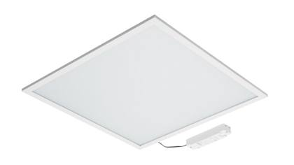
Product photoLED panel
PANEL_SANA_II_28W_600X600_830
In stock since: 2024
2,919 pcsRef #1
LED panel
PANEL_SANA_II_35W_600X600_830
In stock since: 2024
2,040 pcsRef #2
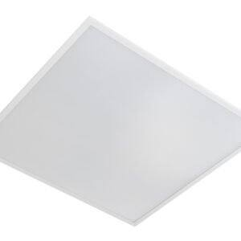
Representative photoLED panel
PANEL_ELIES_PV1_30W_4000K_IP54+HOLE_SENS
In stock since: 2025
1,939 pcsRef #3
LED panel
PANEL_SANA_600X600_33W_TW
In stock since: 2024
1,419 pcsRef #4
LED panel
PANEL_SANA_PV1_42W_3000K
In stock since: 2024
561 pcsRef #5
LED panel
SANA PV1 35W 3000K - 3SDCM
In stock since: 2020
327 pcsRef #6
LED panel
EZAR III PR1 35W 840
In stock since: 2022
314 pcsRef #7
LED panel
PANEL_SANA_PR1_42W_3000K
In stock since: 2017
237 pcsRef #8
LED panel
PANEL_SANA_II_35W_620X620_830
In stock since: 2021
217 pcsRef #9
LED panel
SANA PV1 42W CRI90 3000K - 3SDCM
In stock since: 2020
178 pcsRef #10
LED panel
SNA PV1 MCD 290093 135 ECG W16
In stock since: 2020
153 pcsRef #11
LED panel
PANEL_SANA_BSC_PV1_33W_4000K_3SDCM
In stock since: 2019
111 pcsRef #12
LED panel
EZR III PV1 OPD 350084 135 ECG W16
In stock since: 2021–2022
47 pcsRef #13
LED panel
SANA PV4 36W 3000K - 3SDCM
In stock since: 2018
43 pcsRef #14
LED panel
SANA PR1 35W 3000K - 3SDCM
In stock since: 2024
41 pcsRef #15
LED panel
SANA PV1 33W CRI90 3000K - 3SDCM
In stock since: 2020
41 pcsRef #16
LED panel
SANA_SUS-SAFETY_WIRE
In stock since: 2021
33 pcsRef #17
LED panel
PANEL_SANA_II_28W_620X620_830
In stock since: 2021
25 pcsRef #18
LED panel
SANA_PV1_35W_6500K_6SDCM
In stock since: 2017
24 pcsRef #19
More items without photo (31)
| Ref | Item | Type | Status | Qty |
|---|---|---|---|---|
| Ref #20 | SNA ECO PV1 MCD 370084 135 ECG W16 In stock since: 2022 | LED panel | Complete luminaire | 11 |
| Ref #21 | PANEL_SANA_II_35W_600X600_840 In stock since: 2025 | LED panel | Complete luminaire | 10 |
| Ref #22 | PANEL_SANA_PR1_33W_4000K In stock since: 2017 | LED panel | Complete luminaire | 10 |
| Ref #23 | USNA PR1 MCD 420084 143 ECG W16 In stock since: 2017 | LED panel | Complete luminaire | 9 |
| Ref #24 | ZSR MGN II M L05 1459074 1100 ECC G06 In stock since: 2023 | LED panel | Complete luminaire | 8 |
| Ref #25 | LED PANEL PV1 43W 840 In stock since: 2017 | LED panel | Complete luminaire | 8 |
| Ref #26 | ELIES PV1 MCD 430084 31W FIX 9003 In stock since: 2024 | LED panel | Complete luminaire | 6 |
| Ref #27 | PANEL_SANA_PV4_33W_4000K In stock since: 2019 | LED panel | Complete luminaire | 5 |
| Ref #28 | SANA PV1 35W 4000K - 3SDCM In stock since: 2020 | LED panel | Complete luminaire | 5 |
| Ref #29 | LED_PANEL_SLIM_DECRUX_SP_619_619_5300K In stock since: 2014 | LED panel | Complete luminaire | 5 |
| Ref #30 | USNA PR1 MCD 420084 143 EDA W16 In stock since: 2019 | LED panel | Complete luminaire | 5 |
| Ref #31 | DARIS PV1 34W 840 In stock since: 2021 | LED panel | Complete luminaire | 4 |
| Ref #32 | ECOPHONE LINE E T24 PANEL LED WHITEFRST In stock since: 2016 | LED panel | Complete luminaire | 4 |
| Ref #33 | OMZM PV1 OPD 400084 138 ECG W03 In stock since: 2024 | LED panel | Complete luminaire | 3 |
| Ref #34 | HMO PV1 PRD 31008TW 130 EDA W03 In stock since: 2022 | LED panel | Complete luminaire | 3 |
| Ref #35 | RADIX NEUTRAL WHITE 4000K 1200X300 MPO In stock since: 2016–2018 | LED panel | Complete luminaire | 3 |
| Ref #36 | USNA PR1 MCD 370084 135 ECG W16 In stock since: 2019 | LED panel | Complete luminaire | 3 |
| Ref #37 | PANEL_SANA_PV4_33W_3000K In stock since: 2018 | LED panel | Complete luminaire | 2 |
| Ref #38 | HMO PV1 PRD 32009PI 153 EDA W03 In stock since: 2020 | LED panel | Complete luminaire | 2 |
| Ref #39 | SNA PV1 MCD 365084 135 ECG W16 In stock since: 2022 | LED panel | Complete luminaire | 2 |
| Ref #40 | USNA PR1 MCD 375084 135 ECG W16 In stock since: 2017 | LED panel | Complete luminaire | 2 |
| Ref #41 | USNA PV1 MCD 365084 135 ECG W16 In stock since: 2019 | LED panel | Complete luminaire | 2 |
| Ref #42 | PANEL_SANA_PV1_42W_4000K In stock since: 2017 | LED panel | Complete luminaire | 1 |
| Ref #43 | ZSR MGN II M L01 1430074 199 DRO G06 In stock since: 2022 | LED panel | Complete luminaire | 1 |
| Ref #44 | OMGN L PMT L01 2300074 1209 DRC G06 In stock since: 2019 | LED panel | Complete luminaire | 1 |
| Ref #45 | SNA BSC PV1 MCD 380084 133 ECG W16 In stock since: 2019 | LED panel | Complete luminaire | 1 |
| Ref #46 | SNA II PV1 MCD 360083 130 ECG W16 In stock since: 2025 | LED panel | Complete luminaire | 1 |
| Ref #47 | SNA II PV1 MCD 390083 135 ECG W16 In stock since: 2025 | LED panel | Complete luminaire | 1 |
| Ref #48 | SNA II PV1 MCD ____84 ___ ___ W16 In stock since: 2021 | LED panel | Complete luminaire | 1 |
| Ref #49 | SNA PV1 MCD 365084 135 EDA W16 In stock since: 2020 | LED panel | Complete luminaire | 1 |
| Ref #50 | USNA BSC PR1 MCD 380084 133 EDA W16 In stock since: 2019 | LED panel | Complete luminaire | 1 |
High-bay, linear industrial & moisture-proof luminaires 92 items · 10,072 pcs
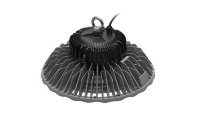
Product photoLED high-bay luminaire
PARIDA_ECO_150W_4000K_112°_BLACK
In stock since: 2022
1,149 pcsRef #51
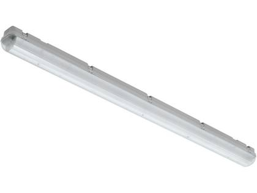
Product photoMoisture-proof luminaire (IP65/IP66)
TORNADO_PC_36W_SAC_KLIPS_PLAST_AUS
In stock since: 2017–2018
950 pcsRef #52
Moisture-proof luminaire (IP65/IP66)
TORNADO_PC_58W_SAC_PC07_KLIPS_INOX
In stock since: 2018
811 pcsRef #53
Moisture-proof luminaire (IP65/IP66)
TORNADO_PC2_T8_1/2X36W_T5_1/2X28/54W N
In stock since: 2018–2019
660 pcsRef #54
Moisture-proof luminaire (IP65/IP66)
TORNADO_PC_58W_SAC_PC03_KLIPS_PLAST
In stock since: 2018–2019
646 pcsRef #55
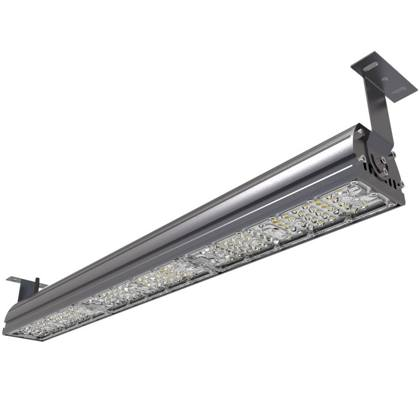
Representative photoLED linear industrial luminaire
TEMPERA L 1500 7400LM 840 50W
In stock since: 2024–2026
520 pcsRef #56
LED linear industrial luminaire
TEMPERA M S/S 520084 35W SCG
In stock since: 2025
500 pcsRef #57
Moisture-proof luminaire (IP65/IP66)
TORNADO_PC_18W_SAC_PC01_KLIPS_PLAST
In stock since: 2018
498 pcsRef #58
Moisture-proof luminaire (IP65/IP66)
TORNADO_PC2_T8_1/2X58W_T5_1/2X35/49W N
In stock since: 2018–2019
493 pcsRef #59
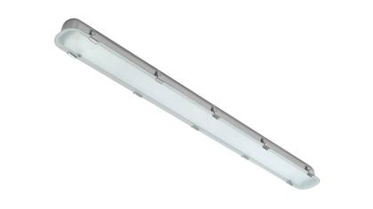
Product photoMoisture-proof luminaire (IP65/IP66)
TDO_V_OPAL_1200_MM_INOX
In stock since: 2023
444 pcsRef #60
Moisture-proof luminaire (IP65/IP66)
TORNADO_PC_36W_SAC_PC02_KLIPS_PLAST
In stock since: 2018
400 pcsRef #61
LED linear industrial luminaire
TEMPERA L S/S 730084 50W SCG
In stock since: 2025
376 pcsRef #62
Moisture-proof luminaire (IP65/IP66)
TDO_V_OPAL_1500_MM_INOX
In stock since: 2021
348 pcsRef #63
Moisture-proof luminaire (IP65/IP66)
TDO_V_OPAL_600_MM_INOX
In stock since: 2022–2023
265 pcsRef #64
Moisture-proof luminaire (IP65/IP66)
TORNADO_PC_36W_SAC_PC06_KLIPS_INOX
In stock since: 2018
206 pcsRef #65
LED linear industrial luminaire
TEMPERA M 1200 5300LM 840 35W
In stock since: 2024
175 pcsRef #66
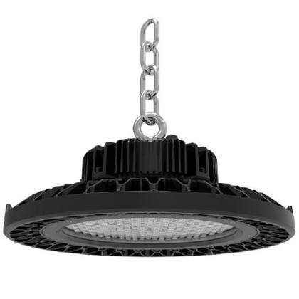
Representative photoLED high-bay luminaire
CAPRICORN_150W_SYM_LOGO_TRILUX
In stock since: 2016
132 pcsRef #67
LED high-bay luminaire
PARIDA_100W_840_GRAY_W/O_OPTIC
In stock since: 2020
96 pcsRef #68
LED high-bay luminaire
PARIDA_ECO_150W_4000K_112°_DALI
In stock since: 2020
96 pcsRef #69
LED linear industrial luminaire
TEMPERA L S/S 965084 71W SCG
In stock since: 2025
94 pcsRef #70
Moisture-proof luminaire (IP65/IP66)
TORNADO_PC_70W_SAC_PC08_KLIPS_INOX
In stock since: 2018
87 pcsRef #71
LED high-bay luminaire
PARIDA_150W_865_GRAY_W/O_OPTIC
In stock since: 2020
81 pcsRef #72
Moisture-proof luminaire (IP65/IP66)
TORNADO_PC_18W_SAC_PC05_KLIPS_INOX
In stock since: 2018
75 pcsRef #73
Moisture-proof luminaire (IP65/IP66)
TORNADO_PC_SAC_PRECH_DRZIAK
In stock since: 2018
71 pcsRef #74
Moisture-proof luminaire (IP65/IP66)
TORNADO_PC2_T8_1/2X58W_T5_1/2X35/49W V
In stock since: 2018
67 pcsRef #75
Moisture-proof luminaire (IP65/IP66)
TDO BSC M S/S OPD 330084 126 ECG G35
In stock since: 2021
60 pcsRef #76
Moisture-proof luminaire (IP65/IP66)
TDO_V_OPAL_600_MM
In stock since: 2022
58 pcsRef #77
LED high-bay luminaire
CAPRICORN_250W_SYM
In stock since: 2017
47 pcsRef #78
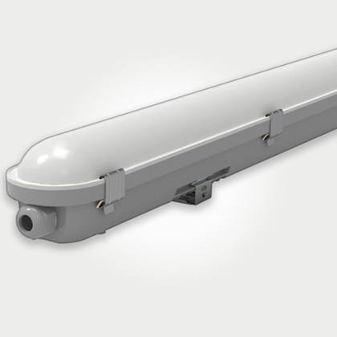
Representative photoMoisture-proof luminaire (IP65/IP66)
TORN_PC_T8_2X36W_T5_2X28/54W_SIROKY V
In stock since: 2017
47 pcsRef #79
Moisture-proof luminaire (IP65/IP66)
TDO BSC L S/SS OPD 620084 150 ECG G35
In stock since: 2021
39 pcsRef #80
LED high-bay luminaire
TRUXIAN 1945 2170084 146W FIX ZN
In stock since: 2025
37 pcsRef #81
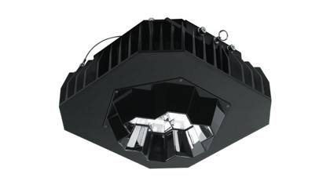
Product photoLED high-bay luminaire
GFS RCS 80° 1730075 1117 ECG W03
In stock since: 2022
37 pcsRef #82
Moisture-proof luminaire (IP65/IP66)
TDO BSC M S/S OPD 490084 139 ECG G35
In stock since: 2021
33 pcsRef #83
LED linear industrial luminaire
TEMPERA L S/S 730084 50W SCG+SE
In stock since: 2025
30 pcsRef #84
LED linear industrial luminaire
TEMPEST M S/S 505084 37W FIX 7035
In stock since: 2024
30 pcsRef #85
Moisture-proof luminaire (IP65/IP66)
TDO BSC L S/SS OPD 390084 129 ECG G35
In stock since: 2020
28 pcsRef #86
Moisture-proof luminaire (IP65/IP66)
TDO_V_OPAL_1500_MM
In stock since: 2019
28 pcsRef #87
Moisture-proof luminaire (IP65/IP66)
TDO BSC L S/S OPD 390084 134 ECG G35
In stock since: 2020
27 pcsRef #88
Moisture-proof luminaire (IP65/IP66)
ARCSOURCE OUTDOOR 4 MC 11°
In stock since: 2014
26 pcsRef #89
LED high-bay luminaire
PARIDA_100W_840_GRAY_W/O_OPTIC (DALI)
In stock since: 2019
26 pcsRef #90
LED high-bay luminaire
PRO L SS 112° 2845084 1191 EDA B05
In stock since: 2023
25 pcsRef #91
LED high-bay luminaire
PARIDA_ECO_100W_4000K_112°_DALI
In stock since: 2020–2021
24 pcsRef #92
Moisture-proof luminaire (IP65/IP66)
TDO BSC S S/SS OPD 20084 123 ECG
In stock since: 2020
23 pcsRef #93
Moisture-proof luminaire (IP65/IP66)
TDO V BCS 70W 1560MM 840
In stock since: 2023
21 pcsRef #94
More items without photo (48)
| Ref | Item | Type | Status | Qty |
|---|---|---|---|---|
| Ref #95 | FORTUNA COMFORT 1245 840 9800LM FIX 60° In stock since: 2024 | LED high-bay luminaire | Complete luminaire | 19 |
| Ref #96 | TDO V BCS 35W 1260MM 840 In stock since: 2021 | Moisture-proof luminaire (IP65/IP66) | Complete luminaire | 17 |
| Ref #97 | MYR II RCD PRD 3480085 1270 ECG W03 In stock since: 2022 | LED high-bay luminaire | Complete luminaire | 16 |
| Ref #98 | CAPRICORN_400W_SYM_LOGO_TRILUX In stock since: 2017 | LED high-bay luminaire | Complete luminaire | 12 |
| Ref #99 | TDO BSC M S/SS OPD 300084 125 ECG G35 In stock since: 2020 | Moisture-proof luminaire (IP65/IP66) | Complete luminaire | 11 |
| Ref #100 | PARIDA_70W_840_GRAY_W/O_OPTIC In stock since: 2017 | LED high-bay luminaire | Complete luminaire | 9 |
| Ref #101 | TEMPERA L 1500 11000LM 840 73W In stock since: 2024 | LED linear industrial luminaire | Complete luminaire | 9 |
| Ref #102 | TORN_PC_T8_1X36W_T5_1X28/54W_UZKY V In stock since: 2017 | Moisture-proof luminaire (IP65/IP66) | Complete luminaire | 9 |
| Ref #103 | OGFS SSD 80° 1040084 194 ECG B05 In stock since: 2021 | LED high-bay luminaire | Complete luminaire | 6 |
| Ref #104 | TDO BSC L S/S OPD 420084 133 ECG G35 In stock since: 2022 | Moisture-proof luminaire (IP65/IP66) | Complete luminaire | 6 |
| Ref #105 | TDO_PC_L_1500_3%_POLY V In stock since: 2018 | Moisture-proof luminaire (IP65/IP66) | Complete luminaire | 5 |
| Ref #106 | UTDO III E L S/S 370084 126 ECG G35 In stock since: 2025 | Moisture-proof luminaire (IP65/IP66) | Complete luminaire | 5 |
| Ref #107 | OGFS SFD 80° 1720075 1142 ECG W03 In stock since: 2019–2020 | LED high-bay luminaire | Complete luminaire | 5 |
| Ref #108 | TDO V BCS 50W 1260MM 840 In stock since: 2021 | Moisture-proof luminaire (IP65/IP66) | Complete luminaire | 5 |
| Ref #109 | TEMPERA L S/S 1065084 73W DALI In stock since: 2025 | LED linear industrial luminaire | Complete luminaire | 4 |
| Ref #110 | OGFS SFD 80° 1600084 1142 ECG B05 In stock since: 2022 | LED high-bay luminaire | Complete luminaire | 4 |
| Ref #111 | TDO V BSC S S/S OPD 425084 130 ECG G35 In stock since: 2022 | Moisture-proof luminaire (IP65/IP66) | Complete luminaire | 3 |
| Ref #112 | TORN_PC_T8_1X58W_T5_1X35/49W_UZKY N In stock since: 2018 | Moisture-proof luminaire (IP65/IP66) | Complete luminaire | 3 |
| Ref #113 | TEMPERA L S/S 1065084 73W SCG In stock since: 2025 | LED linear industrial luminaire | Complete luminaire | 2 |
| Ref #114 | CAPRICORN_250W_AYM_EL_PARTS_LOGO_ELIFE In stock since: 2018 | LED high-bay luminaire | Complete luminaire | 2 |
| Ref #115 | PARIDA_ECO_100W_4000K_112°_BLACK In stock since: 2021 | LED high-bay luminaire | Complete luminaire | 2 |
| Ref #116 | TDO BSC L S/S OPD 580084 156 ECG G35 In stock since: 2020 | Moisture-proof luminaire (IP65/IP66) | Complete luminaire | 2 |
| Ref #117 | TDO V BCS 45W 1560MM 840 In stock since: 2022 | Moisture-proof luminaire (IP65/IP66) | Complete luminaire | 2 |
| Ref #118 | TDO V BSC L S/S OPD 615084 146 ECG G35 In stock since: 2022 | Moisture-proof luminaire (IP65/IP66) | Complete luminaire | 2 |
| Ref #119 | TORN_PC_T8_2X36W_T5_2X28/54W_SIRKY V CR In stock since: 2015 | Moisture-proof luminaire (IP65/IP66) | Complete luminaire | 2 |
| Ref #120 | TORN_PC_T8_2X58W_T5_2X35/49W_SIROKY N In stock since: 2018 | Moisture-proof luminaire (IP65/IP66) | Complete luminaire | 2 |
| Ref #121 | MKIT_TORNADO_STAINLESS STEEL_1X36_2OT In stock since: 2021 | Moisture-proof luminaire (IP65/IP66) | Complete luminaire | 1 |
| Ref #122 | OTDO V S S/S 335084 125 EDA G35 In stock since: 2019 | Moisture-proof luminaire (IP65/IP66) | Complete luminaire | 1 |
| Ref #123 | PARIDA_200W_840_GRAY_W/O_OPTIC (DALI) In stock since: 2021 | LED high-bay luminaire | Complete luminaire | 1 |
| Ref #124 | TEMPERA M S/S 750084 51W DALI In stock since: 2025 | LED linear industrial luminaire | Complete luminaire | 1 |
| Ref #125 | TEMPEST M S/S 345084 24W FIX 7035 In stock since: 2024 | LED linear industrial luminaire | Complete luminaire | 1 |
| Ref #126 | TRUXIAN LME 1245 980084 63W FIX ZN In stock since: 2024 | LED high-bay luminaire | Complete luminaire | 1 |
| Ref #127 | TRUXIAN XXL S/S LCO 1505084 105W SCG ZN In stock since: 2025 | LED high-bay luminaire | Complete luminaire | 1 |
| Ref #128 | UTDO BSC L S/S OPD 390084 129 ECG G35 In stock since: 2025 | Moisture-proof luminaire (IP65/IP66) | Complete luminaire | 1 |
| Ref #129 | UTDO III E M S/S ____84 ___ ___ G35 In stock since: 2021 | Moisture-proof luminaire (IP65/IP66) | Complete luminaire | 1 |
| Ref #130 | UTDO III E S S/S 345084 125 EDA G35 In stock since: 2021 | Moisture-proof luminaire (IP65/IP66) | Complete luminaire | 1 |
| Ref #131 | UTDO V BSC L S/S OPD 970084 170 ECG G35 In stock since: 2024 | Moisture-proof luminaire (IP65/IP66) | Complete luminaire | 1 |
| Ref #132 | GFS SSD 80° 2345084 1181 EDA B05 In stock since: 2021 | LED high-bay luminaire | Complete luminaire | 1 |
| Ref #133 | OGFS RCS 80° 1190075 194 ECG W03 In stock since: 2025 | LED high-bay luminaire | Complete luminaire | 1 |
| Ref #134 | OTDO V L S/S 960084 169 ECG G35 In stock since: 2019 | Moisture-proof luminaire (IP65/IP66) | Complete luminaire | 1 |
| Ref #135 | OTDO V L S/S 960084 169 EDA G35 In stock since: 2019 | Moisture-proof luminaire (IP65/IP66) | Complete luminaire | 1 |
| Ref #136 | OTDO V M S/S 630084 146 ECG G35 In stock since: 2019 | Moisture-proof luminaire (IP65/IP66) | Complete luminaire | 1 |
| Ref #137 | OTDO V M S/S 630084 146 EDA G35 In stock since: 2019 | Moisture-proof luminaire (IP65/IP66) | Complete luminaire | 1 |
| Ref #138 | PARIDA_PLUS_200W_4K_BLACK In stock since: 2019 | LED high-bay luminaire | Complete luminaire | 1 |
| Ref #139 | PRO L SS 90° 2540084 1165 ECG B05 In stock since: 2023 | LED high-bay luminaire | Complete luminaire | 1 |
| Ref #140 | PRO M SS 112° 1910084 1122 ECG B05 In stock since: 2022 | LED high-bay luminaire | Complete luminaire | 1 |
| Ref #141 | UTDO III E M S/S 605084 143 ECG G35 In stock since: 2023 | Moisture-proof luminaire (IP65/IP66) | Complete luminaire | 1 |
| Ref #142 | UTDO SS M SSD 565084 142 EDA G35 In stock since: 2019 | Moisture-proof luminaire (IP65/IP66) | Complete luminaire | 1 |
Street lights, floodlights & outdoor luminaires 49 items · 2,552 pcs
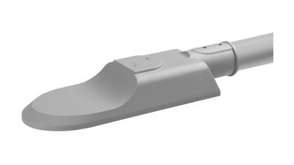
Product photoLED street light
SAGAR_30W_STREETLIGHT_4000K
In stock since: 2019–2021
900 pcsRef #143
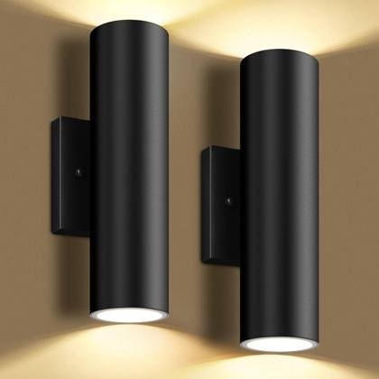
Representative photoOutdoor luminaire
OCRL II XS W/P LME 665073 150 ECG B17
In stock since: 2025
639 pcsRef #144
Outdoor luminaire
OCRL II M W/P LME 2010073 1150 ECG B17
In stock since: 2025
467 pcsRef #145
Outdoor luminaire
OCRL II S W/P LME 1340073 1100 ECG B17
In stock since: 2025
107 pcsRef #146
Outdoor luminaire
OBTN PV1 OPD 345083 132 EDA W03
In stock since: 2017
60 pcsRef #147
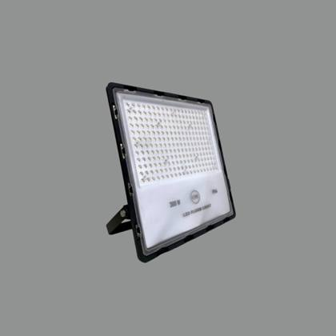
Representative photoLED floodlight
CAPRIOLA_ASYM_100W_FLOODLIGHT_3000K
In stock since: 2020
55 pcsRef #148
LED floodlight
CAPRIOLA_ASYM_60W_FLOODLIGHT_3000K
In stock since: 2020
40 pcsRef #149
Outdoor luminaire
OGHA-L MDS LMW 1240084 1102 EDA W03
In stock since: 2019
38 pcsRef #150
LED floodlight
CAPRIOLA_II_ASYM_100W_3000K
In stock since: 2022
27 pcsRef #151
Outdoor luminaire
OSGN L PMT LNS 1275075 1170 ECG G06
In stock since: 2017
26 pcsRef #152
More items without photo (39)
| Ref | Item | Type | Status | Qty |
|---|---|---|---|---|
| Ref #153 | OBTN PV1 OPD 345083 132 ECG W03 In stock since: 2017 | Outdoor luminaire | Complete luminaire | 19 |
| Ref #154 | RS-S 58 L150 RD W In stock since: 2025 | LED floodlight | Complete luminaire | 18 |
| Ref #155 | USTR W/P ASY MT/ST 1250 CCG G06 In stock since: 2017 | LED street light | Complete luminaire | 14 |
| Ref #156 | CAPRIOLA_ASYM_200W_FLOODLIGHT_3000K In stock since: 2020 | LED floodlight | Complete luminaire | 12 |
| Ref #157 | UCPN W/P SYM MD/SD 1150 CCG B05 In stock since: 2018 | Outdoor luminaire | Complete luminaire | 11 |
| Ref #158 | STADIO_VENUS_AS_50°_DEFLECT_1000W_E40_M In stock since: 2017 | LED floodlight | Complete luminaire | 10 |
| Ref #159 | CAPRIOLA_II_SYM_150W_3000K In stock since: 2021 | LED floodlight | Complete luminaire | 8 |
| Ref #160 | FLOODLIGHT STAR ACS PROTEC GRID 250/400 In stock since: 2017 | LED floodlight | Complete luminaire | 8 |
| Ref #161 | UX-STADIO_VENUS_AS_PEENED_2000W_E40_MT In stock since: 2018 | LED floodlight | Complete luminaire | 8 |
| Ref #162 | STADIO_MARS_AS_PEEN.WIDE_2000W_MD_CABLE In stock since: 2015 | LED floodlight | Complete luminaire | 7 |
| Ref #163 | SAGAR_20W_STREETLIGHT_3000K In stock since: 2019 | LED street light | Complete luminaire | 6 |
| Ref #164 | CAPRIOLA_ASYM_200W_FLOODLIGHT_5000K In stock since: 2021 | LED floodlight | Complete luminaire | 6 |
| Ref #165 | CAPRIOLA_II_SYM120_200W_5000K In stock since: 2020 | LED floodlight | Complete luminaire | 6 |
| Ref #166 | CRL II L W/P LME 2800075 1200 ECG B17 In stock since: 2022 | Outdoor luminaire | Complete luminaire | 5 |
| Ref #167 | CAPRIOLA_II_SYM_100W_3000K In stock since: 2021 | LED floodlight | Complete luminaire | 4 |
| Ref #168 | SAGAR_50W_STREETLIGHT_4000K In stock since: 2021 | LED street light | Complete luminaire | 4 |
| Ref #169 | CAPRIOLA TSG 100W 5700K In stock since: 2022 | LED floodlight | Complete luminaire | 4 |
| Ref #170 | OBTN PV1 OPD 330084 132 ECG W03 In stock since: 2019 | Outdoor luminaire | Complete luminaire | 4 |
| Ref #171 | OCRL W/P LWE 1050075 180 ECG B17 In stock since: 2022 | Outdoor luminaire | Complete luminaire | 4 |
| Ref #172 | CAPRIOLA_II_SYM_50W_3000K In stock since: 2021 | LED floodlight | Complete luminaire | 3 |
| Ref #173 | CRL II XS W/P LME 700075 150 ECG B17 In stock since: 2021 | Outdoor luminaire | Complete luminaire | 3 |
| Ref #174 | CRL W/P LAS 750075 160 ECG B17 In stock since: 2022 | Outdoor luminaire | Complete luminaire | 3 |
| Ref #175 | OBTN PR1 OPD 320083 132 ECG W03 In stock since: 2018 | Outdoor luminaire | Complete luminaire | 3 |
| Ref #176 | STADIO_MARS_C5_LARGE_2000W_MD_CABLE In stock since: 2017 | LED floodlight | Complete luminaire | 3 |
| Ref #177 | RS-S 58 L150 SQ W In stock since: 2025 | LED floodlight | Complete luminaire | 2 |
| Ref #178 | CRL II M W/P LAS 2010073 1150 ECG B17 In stock since: 2022 | Outdoor luminaire | Complete luminaire | 2 |
| Ref #179 | FLOODLIGHT STAR ACS ANTIGLARE LOUVER SY In stock since: 2017 | LED floodlight | Complete luminaire | 2 |
| Ref #180 | OGHA-L MDS LCO 1290074 190 EDA W03 In stock since: 2020 | Outdoor luminaire | Complete luminaire | 2 |
| Ref #181 | OJRY S WMD 10°+10° 65083 18W NHG In stock since: 2022 | Outdoor luminaire | Complete luminaire | 2 |
| Ref #182 | STADIO_MARS_AS_NARROW_2000W_MD_CABLE In stock since: 2015 | LED floodlight | Complete luminaire | 1 |
| Ref #183 | CRL II S W/P LAS 1400075 1100 ECG B17 In stock since: 2022 | Outdoor luminaire | Complete luminaire | 1 |
| Ref #184 | KEATON_M_88W_740_R01_ECG In stock since: 2018 | LED street light | Complete luminaire | 1 |
| Ref #185 | OGHA-L MDS LME 1245084 1102 EDA W03 In stock since: 2017 | Outdoor luminaire | Complete luminaire | 1 |
| Ref #186 | OGHA-L MDS LME 1295074 190 EDA W03 In stock since: 2020 | Outdoor luminaire | Complete luminaire | 1 |
| Ref #187 | OJRY M WMD 45°+10° 145084 24W NHG In stock since: 2018 | Outdoor luminaire | Complete luminaire | 1 |
| Ref #188 | OJRY FLD M WMD 40° 155084 20W NHG In stock since: 2020 | Outdoor luminaire | Complete luminaire | 1 |
| Ref #189 | STADIO_MOONBOOSTER_C1_VERY_NARROW In stock since: 2017 | LED floodlight | Complete luminaire | 1 |
| Ref #190 | UCPN W/P ASY ___ 1400 ___ B05 In stock since: 2015 | Outdoor luminaire | Complete luminaire | 1 |
| Ref #191 | UCPN W/P SYM MT/ST 1250 ___ B05 In stock since: 2015 | Outdoor luminaire | Complete luminaire | 1 |
Indoor – downlights, linear & ceiling luminaires 249 items · 12,452 pcs
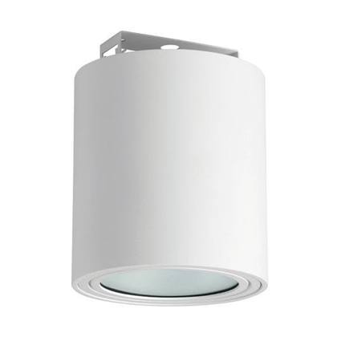
Representative photoLED downlight
SMP EC1 M SFD OPD 170084 115 ECG
In stock since: 2022–2023
2,262 pcsRef #192
LED downlight
SMP EC1 XM SFD OPD 135084 112 ECG
In stock since: 2022–2023
825 pcsRef #194
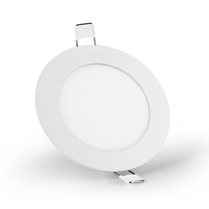
Representative photoLED downlight
DWN BASIC S 60° 110084 10W FIX 9003
In stock since: 2019–2021
824 pcsRef #195
LED downlight
UX-DOWNLIGHT_241_FACET_A60
In stock since: 2017
742 pcsRef #196
LED downlight
SMP EC1 M SFD OPD 160083 115 ECG
In stock since: 2022–2023
686 pcsRef #197
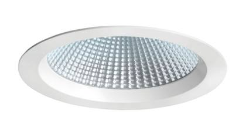
Product photoLED downlight
DWN_PERLITA_25W_M_4000K_W03
In stock since: 2019–2020
450 pcsRef #198
LED downlight
UDWN EC1 OPD 140083 116 ECG
In stock since: 2022–2023
386 pcsRef #199
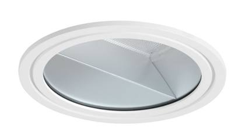
Product photoLED downlight
PTS II E DWN PRE 260083 128 ECG W03
In stock since: 2023–2025
382 pcsRef #200
LED downlight
DWN_PERLITA_25W_L_4000K
In stock since: 2021
364 pcsRef #201
LED downlight
UPRA L DWN FRT 235084 124 ECG W03
In stock since: 2021
245 pcsRef #202
LED downlight
UPDA SSD 90° 950084 170 ECG G06
In stock since: 2017–2018
241 pcsRef #203
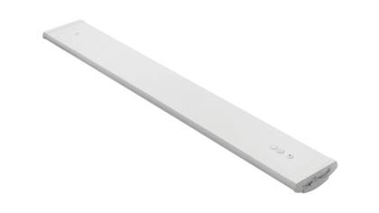
Product photoIndoor LED luminaire
KIT_PLAST_H_28W_PC_PRISMA_OPAL
In stock since: 2015
202 pcsRef #205
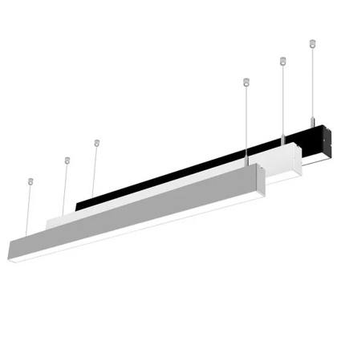
Representative photoLED linear / profile luminaire
LED_LINEAR_8W_4000K
In stock since: 2017
190 pcsRef #206
LED downlight
UX-DOWNLIGHT_244_FACET
In stock since: 2014
188 pcsRef #207
Indoor LED luminaire
KIT_PLAST_H_35W_PC_PRISMA_OPAL
In stock since: 2015
175 pcsRef #208
LED downlight
DWN_PERLITA_ADJ_25W_4000K_60°
In stock since: 2020
174 pcsRef #209
LED downlight
DWN_PERLITA_35W_M_3000K_HL
In stock since: 2016
151 pcsRef #211
LED downlight
OALR C S SFD D 225083 118 EDA G06
In stock since: 2022
140 pcsRef #212
LED linear / profile luminaire
LED_LINEAR_12W_3000K
In stock since: 2017
115 pcsRef #214
LED downlight
COMIR B-L_29W_4000K
In stock since: 2019–2023
100 pcsRef #215
LED downlight
COMIR C-M_27W_4000K
In stock since: 2019
100 pcsRef #216
LED downlight
UPDA E SSD 112° 1630084 1150 EDA B17
In stock since: 2022–2023
85 pcsRef #217
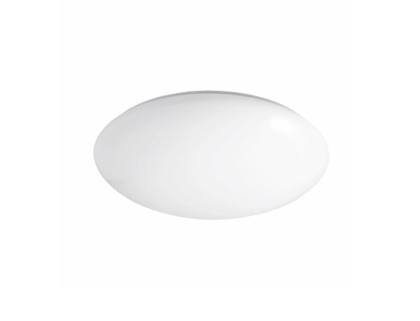
Representative photoIndoor LED luminaire
GENA_FDH/YL6711_LED_BEZ_MONTAZ_DOSKY_PAT
In stock since: 2017
69 pcsRef #218
LED downlight
COMIR F-L_72W_4000K
In stock since: 2022
64 pcsRef #220
LED downlight
COMIR L 28W 840 G3 1500MM
In stock since: 2021
64 pcsRef #221
LED linear / profile luminaire
870_LUMNIUM_EU_130_SO 24W_1200
In stock since: 2024
58 pcsRef #222
LED downlight
72.1002+TA210CLEARHALO, PHOENIX 2
In stock since: 2017–2019
41 pcsRef #223
LED downlight
LED_DOWNLIGHT_18W_3000K
In stock since: 2022
39 pcsRef #224
LED downlight
PDA SSD 50° 2650084 1200 ECG G06
In stock since: 2022–2023
39 pcsRef #225
LED downlight
PRETTUS M PRE 225084 19W FIX W03
In stock since: 2025
38 pcsRef #226
LED downlight
DWN BASIC S 90° 110084 10W FIX 9003
In stock since: 2022
36 pcsRef #227
LED downlight
ONVL S DWN ASM 115083 114 ECG W03
In stock since: 2016
34 pcsRef #228
LED downlight
COMIR B-L_60W_4000K
In stock since: 2019–2020
33 pcsRef #231
LED downlight
OVSN M DWN WRE FSQ 126 ECG
In stock since: 2016
30 pcsRef #232
Indoor LED luminaire
KIT_PLAST_H_14W_PC_PRISMA_OPAL
In stock since: 2015
29 pcsRef #233
LED downlight
OALR C M RCD D 450083 136 EDA G06
In stock since: 2022
28 pcsRef #234
LED downlight
PRUZINA_DOWNLIGHT_02_ELUX
In stock since: 2025
28 pcsRef #235
LED downlight
72.1001+TA200CH, PHOENIX 1
In stock since: 2017
28 pcsRef #236
LED downlight
ALN L RCD OPD 380084 147 EDA W03
In stock since: 2018
27 pcsRef #237
LED downlight
OACN M T SSD OPD 295083 137 ECG B05
In stock since: 2018
27 pcsRef #238
LED downlight
SMT MRR WMD OPD 75009TW 1102 ECG GL
In stock since: 2018–2019
27 pcsRef #239
LED downlight
COMIR F-M_57W_4000K
In stock since: 2019
26 pcsRef #240
LED downlight
UX-DOWNLIGHT_243_FACET
In stock since: 2017
26 pcsRef #241
LED downlight
HARMONY_2X35/49W_FDH_G5_ANODIZED_AL
In stock since: 2014
24 pcsRef #242
LED downlight
72.1001+TA210CLEARHALO, PHOENIX 2
In stock since: 2017–2019
20 pcsRef #243
LED downlight
OJRY SFD 10° 86584 12W NHG
In stock since: 2019
20 pcsRef #244
LED downlight
UPSO SFD 120° 2070084 1180 ECG B05
In stock since: 2015
20 pcsRef #245
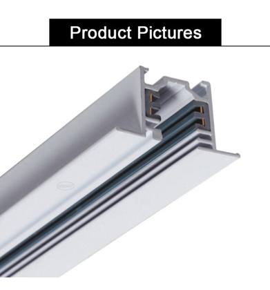
Representative photoLinear lighting system part (profile / rail / cover)
OPRG RS 02 4,5M W03
In stock since: 2023
1,058 pcsRef #193
More items without photo (201)
| Ref | Item | Type | Status | Qty |
|---|---|---|---|---|
| Ref #248 | PRA M DWN FRT 265084 124 ECG W03 In stock since: 2020–2021 | LED downlight | Complete luminaire | 19 |
| Ref #249 | SLE AMIAS - RAAT BLACK In stock since: 2016 | Indoor LED luminaire | Complete luminaire | 18 |
| Ref #251 | SLE AMIAS - RAAT GREY In stock since: 2018 | Indoor LED luminaire | Complete luminaire | 17 |
| Ref #252 | OALN M RCD OPD 305084 137 EDA ELG In stock since: 2019 | LED downlight | Complete luminaire | 17 |
| Ref #253 | OALN L F RCD OPD 380084 147 ECG ELG In stock since: 2019 | LED downlight | Complete luminaire | 15 |
| Ref #254 | OALN L L RCD OPD 380084 147 ECG ELG In stock since: 2019 | LED downlight | Complete luminaire | 15 |
| Ref #255 | OALN L T RCD OPD 380084 147 ECG ELG In stock since: 2019 | LED downlight | Complete luminaire | 15 |
| Ref #256 | OAVR MT DWN 24° 400083 153 ECG W03 In stock since: 2015 | LED downlight | Complete luminaire | 15 |
| Ref #257 | EDIE-1_FBT_YL6648D_Z11-23W_E27_ANTHRACIT In stock since: 2014 | Indoor LED luminaire | Complete luminaire | 14 |
| Ref #258 | ACN M L SSD OPD 295083 137 ECG B05 In stock since: 2018 | LED downlight | Complete luminaire | 14 |
| Ref #259 | COMIR C-L_35W_4000K In stock since: 2018 | LED downlight | Complete luminaire | 14 |
| Ref #260 | LED_LINEAR_16W_4000K In stock since: 2021 | LED linear / profile luminaire | Complete luminaire | 14 |
| Ref #261 | ACN M F SSD OPD 295083 137 ECG B05 In stock since: 2018 | LED downlight | Complete luminaire | 13 |
| Ref #262 | COMIR B-M_24W_4000K In stock since: 2018 | LED downlight | Complete luminaire | 13 |
| Ref #263 | ONEA WMD OPD 105083 20W NHG In stock since: 2019 | Indoor LED luminaire | Complete luminaire | 13 |
| Ref #264 | RAN_1500_53W_840 In stock since: 2017 | LED linear / profile luminaire | Complete luminaire | 13 |
| Ref #265 | UX-GINNY_1_MAX_1X23_FBT_E27_BLACK In stock since: 2016–2017 | Indoor LED luminaire | Complete luminaire | 12 |
| Ref #267 | ELS CS DWN 53° 2100MT+ 134 ECG W03 In stock since: 2022 | LED downlight | Complete luminaire | 11 |
| Ref #268 | HARMONY_2X28/54W_FDH_G5_ANODIZED AL In stock since: 2017 | LED downlight | Complete luminaire | 11 |
| Ref #269 | PDA E SSD 112° 2240084 1200 EDA B17 In stock since: 2021 | LED downlight | Complete luminaire | 11 |
| Ref #270 | 870_LUMNIUM_EU_130_HO 51W_1500 In stock since: 2024 | LED linear / profile luminaire | Complete luminaire | 10 |
| Ref #271 | OPTS XS DWN WRT 85084 18 ECG W03 In stock since: 2025 | LED downlight | Complete luminaire | 10 |
| Ref #272 | ALN M RCD OPD 305084 137 ETD ELG In stock since: 2018 | LED downlight | Complete luminaire | 10 |
| Ref #273 | ALR C S SSD OPD 150083 119 EDA B05 In stock since: 2018 | LED downlight | Complete luminaire | 10 |
| Ref #274 | OABH D-I M WMD OPD 460083 156 EDA ELG In stock since: 2019 | Indoor LED luminaire | Complete luminaire | 10 |
| Ref #275 | ACN M SSD OPD 275084 133 ECG ELG In stock since: 2017 | LED downlight | Complete luminaire | 9 |
| Ref #276 | OACN L SSD OPD 365083 147 ECG ELG In stock since: 2016 | LED downlight | Complete luminaire | 9 |
| Ref #277 | ONVL M DWN ASP 270084 129 EDA W03 In stock since: 2017 | LED downlight | Complete luminaire | 9 |
| Ref #278 | OVSN S DWN WRE FSQ 118 ECG In stock since: 2016 | LED downlight | Complete luminaire | 9 |
| Ref #279 | DWN_PERLITA_ADJ_M_35W_3000K_HL In stock since: 2016 | LED downlight | Complete luminaire | 8 |
| Ref #280 | OALR C S RCD D 225083 118 EDA G06 In stock since: 2022 | LED downlight | Complete luminaire | 8 |
| Ref #281 | OPTS 65 DWN PRT 330084 129 ECG W03 In stock since: 2025 | LED downlight | Complete luminaire | 8 |
| Ref #282 | NANO LINER XB 36 In stock since: 2017–2019 | LED linear / profile luminaire | Complete luminaire | 8 |
| Ref #283 | PROFIL_GNC_ACCENT_BLACK In stock since: 2015 | LED linear / profile luminaire | Complete luminaire | 8 |
| Ref #284 | UPLC E II SFD OPD FDH 121 ECG W03 In stock since: 2018 | LED downlight | Complete luminaire | 8 |
| Ref #285 | EULA_FBT_YL6605FP_Z7-20W_E27_ANTHRACITE In stock since: 2015 | Indoor LED luminaire | Complete luminaire | 7 |
| Ref #288 | PLAST_S_L_LED_OPAL_IP44 In stock since: 2015 | Indoor LED luminaire | Complete luminaire | 7 |
| Ref #289 | LENO_ENDKAPPE_01_W16 In stock since: 2015 | LED linear / profile luminaire | Complete luminaire | 7 |
| Ref #290 | OEND W1 WMD OPD 49084 12W NHG In stock since: 2019 | Indoor LED luminaire | Complete luminaire | 7 |
| Ref #291 | COMIR L S/S 610084 47W FIX G06 In stock since: 2025 | LED downlight | Complete luminaire | 6 |
| Ref #293 | ACN L WMD OPD 335083 146 ECG SPC In stock since: 2017 | LED downlight | Complete luminaire | 6 |
| Ref #294 | ACN M SFD OPD 305084 137 EDA W03 In stock since: 2018 | LED downlight | Complete luminaire | 6 |
| Ref #295 | HARMONY_1X35/49W_FDH_G5_ANODIZED_AL In stock since: 2017 | LED downlight | Complete luminaire | 6 |
| Ref #296 | UFTO UNO RCD FRE QR111 135100 ___ G06 In stock since: 2015 | LED downlight | Complete luminaire | 6 |
| Ref #297 | MIRADO XLED 8.5W 400LM 40 4000K, PERSEUS In stock since: 2013 | Indoor LED luminaire | Complete luminaire | 5 |
| Ref #298 | PRUZINA_DOWNLIGHT_SQUARE In stock since: 2025 | LED downlight | Complete luminaire | 5 |
| Ref #299 | 72.1003+TA200CH, PHOENIX 1 In stock since: 2017 | LED downlight | Complete luminaire | 5 |
| Ref #300 | ALR E S SFD OPD 1065083 1105 ECG B05 In stock since: 2021 | LED downlight | Complete luminaire | 5 |
| Ref #301 | AMIAS_27W_3000K_ECG_GREY In stock since: 2019 | Indoor LED luminaire | Complete luminaire | 5 |
| Ref #302 | LED_LINEAR_8W_3000K In stock since: 2017 | LED linear / profile luminaire | Complete luminaire | 5 |
| Ref #303 | OALR C 2XL SSD OPD 1665084 1153 EDA G06 In stock since: 2018 | LED downlight | Complete luminaire | 5 |
| Ref #304 | 72.1002+TA200WH+TA206SCATTER,PHOENIX 3 In stock since: 2017 | LED downlight | Complete luminaire | 4 |
| Ref #305 | 72.1003+TA200CH+TA206SCATTER, PHOENIX 3 In stock since: 2017 | LED downlight | Complete luminaire | 4 |
| Ref #306 | 72.1003+TA200WH+TA206SCATTER, PHOENIX 3 In stock since: 2017 | LED downlight | Complete luminaire | 4 |
| Ref #307 | 72.1003+TA220/BLUE HI-LIGHT, PHOENIX 5 In stock since: 2017 | LED downlight | Complete luminaire | 4 |
| Ref #308 | ABH L WMD OPD 465083 147 EDA ELG In stock since: 2022 | Indoor LED luminaire | Complete luminaire | 4 |
| Ref #309 | ACN "L" DI SSD OPD 290084 136 EDA ELG In stock since: 2018 | LED downlight | Complete luminaire | 4 |
| Ref #310 | ACN L DI WMD OPD 735084 174 ECG ELG In stock since: 2017 | LED downlight | Complete luminaire | 4 |
| Ref #311 | ACN L T WMD OPD 335083 146 ECG ELG In stock since: 2017 | LED downlight | Complete luminaire | 4 |
| Ref #312 | ECOPHONE LINE LED HOTSING STMIEVATELNE In stock since: 2016 | LED linear / profile luminaire | Complete luminaire | 4 |
| Ref #313 | LED_LINEAR_12W_4000K In stock since: 2022 | LED linear / profile luminaire | Complete luminaire | 4 |
| Ref #314 | OACN CONNECTING PIECE L ELG In stock since: 2018 | LED downlight | Complete luminaire | 4 |
| Ref #315 | OALN L F RCD OPD 365083 147 ECG ELG In stock since: 2017 | LED downlight | Complete luminaire | 4 |
| Ref #316 | OVSN M DWN PRE 300083 136 ECG In stock since: 2016 | LED downlight | Complete luminaire | 4 |
| Ref #317 | OPTS XS DWN PRE 115084 111 ECG W03 In stock since: 2023 | LED downlight | Complete luminaire | 3 |
| Ref #318 | 72.1001+TA200CH+TA206SCATTER, PHOENIX 3 In stock since: 2017 | LED downlight | Complete luminaire | 3 |
| Ref #319 | 72.1002+TA200CH+TA206SCATTER,PHOENIX 3 In stock since: 2017 | LED downlight | Complete luminaire | 3 |
| Ref #320 | ALN M TMS OPD 295083 137 ECG ELG In stock since: 2020 | LED downlight | Complete luminaire | 3 |
| Ref #321 | COMIR B-M_48W_4000K In stock since: 2019–2020 | LED downlight | Complete luminaire | 3 |
| Ref #322 | OACN L SSD OPD 380084 147 EDA ELG In stock since: 2020 | LED downlight | Complete luminaire | 3 |
| Ref #323 | OALN M L RCD OPD 305084 137 ECG ELG In stock since: 2019 | LED downlight | Complete luminaire | 3 |
| Ref #324 | OALN M T RCD OPD 305084 137 ECG ELG In stock since: 2019 | LED downlight | Complete luminaire | 3 |
| Ref #325 | OAVR MT DWN 40° 250083 131 ECG W03 In stock since: 2015 | LED downlight | Complete luminaire | 3 |
| Ref #326 | ONVL S DWN PRO 185083 120 EDA W03 In stock since: 2020 | LED downlight | Complete luminaire | 3 |
| Ref #327 | RAN_1500_53W_840_3X1,5MM In stock since: 2016 | LED linear / profile luminaire | Complete luminaire | 3 |
| Ref #328 | UPLC H E S SFD PRD 230084 124 ECG W03 In stock since: 2024 | LED downlight | Complete luminaire | 3 |
| Ref #329 | UX-DOWNLIGHT_253_POLISHED_FLEX_9005 In stock since: 2015 | LED downlight | Complete luminaire | 3 |
| Ref #330 | ZSR SRN 03 SFD LME _____74 ____ ___ B05 In stock since: 2024 | LED downlight | Complete luminaire | 3 |
| Ref #331 | CLEO_FBT/YL6605A_Z7-20W_E27_GREY_RAL9006 In stock since: 2015 | Indoor LED luminaire | Complete luminaire | 2 |
| Ref #332 | COMIR M S/S 390084 30W FIX G06 In stock since: 2025 | LED downlight | Complete luminaire | 2 |
| Ref #333 | DAISY_60W_FRONTAL_1000MM_E27_GREY In stock since: 2015 | Indoor LED luminaire | Complete luminaire | 2 |
| Ref #335 | OPTS XS DWN WRT 120084 111 EDA W03 In stock since: 2023 | LED downlight | Complete luminaire | 2 |
| Ref #336 | 72.1002+TA220/BLUE HI-LIGHT, PHOENIX 5 In stock since: 2017 | LED downlight | Complete luminaire | 2 |
| Ref #337 | 72.1003+TA225CLEARDECO, PHOENIX 4 In stock since: 2017 | LED downlight | Complete luminaire | 2 |
| Ref #338 | ACN M DI WMD OPD 585084 159 ECG W03 In stock since: 2017 | LED downlight | Complete luminaire | 2 |
| Ref #339 | ALR C S SFD OPD 150083 119 ECG B05 In stock since: 2021 | LED downlight | Complete luminaire | 2 |
| Ref #340 | ALR C S SSD OPD 160084 119 ECG W03 In stock since: 2017 | LED downlight | Complete luminaire | 2 |
| Ref #341 | DOLOMITE 152 C3 LED 3,6W,4000K,30°,GREY In stock since: 2017 | Indoor LED luminaire | Complete luminaire | 2 |
| Ref #342 | ELS CS DWN 53° 310094 132 EDA W03 In stock since: 2023 | LED downlight | Complete luminaire | 2 |
| Ref #343 | JRY FLD S WMD 30° 30083 5W BRZ In stock since: 2021 | Indoor LED luminaire | Complete luminaire | 2 |
| Ref #344 | LED_DOWNLIGHT_20W_4000K In stock since: 2016 | LED downlight | Complete luminaire | 2 |
| Ref #345 | OALN L T RCD OPD 365083 147 ECG ELG In stock since: 2017 | LED downlight | Complete luminaire | 2 |
| Ref #346 | OALN M L RCD OPD 295083 137 ECG ELG In stock since: 2017 | LED downlight | Complete luminaire | 2 |
| Ref #347 | OCAM DWN PRE 255093 125 ECG W03 In stock since: 2016 | LED downlight | Complete luminaire | 2 |
| Ref #348 | OGHA-1 SFD LME 1430084 1123 ECG B05 In stock since: 2018 | LED downlight | Complete luminaire | 2 |
| Ref #349 | OLMA M DI SSD MCD 710084 152 ECG W03 In stock since: 2018–2024 | LED downlight | Complete luminaire | 2 |
| Ref #350 | PRA L DWN FRT 345084 136 ECG W03 In stock since: 2022 | LED downlight | Complete luminaire | 2 |
| Ref #351 | U202 BSC DWN PRO FSQ 226 ECG W16 In stock since: 2024 | LED downlight | Complete luminaire | 2 |
| Ref #352 | 366_DECLAN_RCD_1200X300_33W_4000K_FIX In stock since: 2022 | LED downlight | Complete luminaire | 1 |
| Ref #353 | 366_DECLAN_RCD_600X600_33W_4000K_FIX_EM In stock since: 2022 | LED downlight | Complete luminaire | 1 |
| Ref #354 | DECLAN PV4 MCL 380084 33W FE3 W03 In stock since: 2019 | LED linear / profile luminaire | Complete luminaire | 1 |
| Ref #355 | DWN BASIC L 60° 310084 30W FIX 9003 In stock since: 2019 | LED downlight | Complete luminaire | 1 |
| Ref #356 | DWN BASIC M 60° 110084 10W FIX 9003 In stock since: 2020 | LED downlight | Complete luminaire | 1 |
| Ref #357 | DWN BASIC M 60° 210084 20W FIX 9003 In stock since: 2019 | LED downlight | Complete luminaire | 1 |
| Ref #358 | MILINE SL M SSD W90 455083 30W DALI W03 In stock since: 2025 | LED linear / profile luminaire | Complete luminaire | 1 |
| Ref #364 | OPTS II M DWN PRT 1800TW 122 EBT W03 In stock since: 2022 | LED downlight | Complete luminaire | 1 |
| Ref #365 | OSRN 09 SFD LDE 7545075 1498 EDX B05 In stock since: 2021 | LED downlight | Complete luminaire | 1 |
| Ref #366 | PLAST H L S/S POF 605084 48W ECG W03 In stock since: 2025 | Indoor LED luminaire | Complete luminaire | 1 |
| Ref #367 | RELAX ASYM M RCD 380084 37W FIX W03 In stock since: 2022 | LED downlight | Complete luminaire | 1 |
| Ref #368 | RELAX ASYM S RCD 200083 23W FIX W03 In stock since: 2023 | LED downlight | Complete luminaire | 1 |
| Ref #369 | UNIO_2300 RCD 450084 35W DALI 9016 In stock since: 2025 | LED downlight | Complete luminaire | 1 |
| Ref #370 | 72.1001+TA226 OPAL DECO, PHOENIX 4 In stock since: 2017 | LED downlight | Complete luminaire | 1 |
| Ref #371 | ABH D-I M WMD OPD 460083 156 ECG ELG In stock since: 2017 | Indoor LED luminaire | Complete luminaire | 1 |
| Ref #372 | ABH XM WMD OPD 185084 125 ECG ELG In stock since: 2017 | Indoor LED luminaire | Complete luminaire | 1 |
| Ref #373 | ACN L F WMD OPD 335083 146 ECG ELG In stock since: 2017 | LED downlight | Complete luminaire | 1 |
| Ref #374 | ACN L L WMD OPD 335083 146 ECG ELG In stock since: 2017 | LED downlight | Complete luminaire | 1 |
| Ref #375 | ACN M WMD OPD 285084 137 ECG ELG In stock since: 2020 | LED downlight | Complete luminaire | 1 |
| Ref #376 | ACN S WMD OPD 145084 119 EDA ELG In stock since: 2018 | LED downlight | Complete luminaire | 1 |
| Ref #377 | AEDIG WMD 9°___ WW 1267 EDX SPC In stock since: 2014 | Indoor LED luminaire | Complete luminaire | 1 |
| Ref #378 | AEDILP 36 §WMD 12X35° __ RGB 136 EDX SP In stock since: 2019 | Indoor LED luminaire | Complete luminaire | 1 |
| Ref #379 | ALN L F RCD OPD 380084 147 EDA W03 In stock since: 2019 | LED downlight | Complete luminaire | 1 |
| Ref #380 | ALN L L RCD OPD 380084 147 EDA W03 In stock since: 2019 | LED downlight | Complete luminaire | 1 |
| Ref #381 | ALN M TMS OPD 295083 137 EDA ELG In stock since: 2021 | LED downlight | Complete luminaire | 1 |
| Ref #382 | ALR C L SFD D 695083 173 ECG W03 In stock since: 2019 | LED downlight | Complete luminaire | 1 |
| Ref #383 | ALR C L SFD OPD 695083 173 ECG B05 In stock since: 2021 | LED downlight | Complete luminaire | 1 |
| Ref #384 | ALR C L SSD OPD 720084 173 ECG W03 In stock since: 2017 | LED downlight | Complete luminaire | 1 |
| Ref #385 | ALR C M SSD D 320084 140 ECG G06 In stock since: 2019 | LED downlight | Complete luminaire | 1 |
| Ref #386 | ALR C M SSD OPD 320084 140 ECG W03 In stock since: 2017 | LED downlight | Complete luminaire | 1 |
| Ref #387 | ALR C S RCD D 180084 118 ECG W03 In stock since: 2019 | LED downlight | Complete luminaire | 1 |
| Ref #388 | ALR C S SSD OPD 150083 119 ECG W03 In stock since: 2018 | LED downlight | Complete luminaire | 1 |
| Ref #389 | ALR C XL SFD OPD 1150083 1110 EDA B05 In stock since: 2018 | LED downlight | Complete luminaire | 1 |
| Ref #390 | ALR C XL SFD OPD 1200084 1110 ECG W03 In stock since: 2018 | LED downlight | Complete luminaire | 1 |
| Ref #391 | ALR E S SFD OPD 1120084 1105 ECG E18 In stock since: 2019 | LED downlight | Complete luminaire | 1 |
| Ref #392 | ALR Q XL SFD OPD 3265083 1272 ECG G06 In stock since: 2017 | LED downlight | Complete luminaire | 1 |
| Ref #393 | ALR Q XL SSD OPD 3265083 1272 ECG G06 In stock since: 2017 | LED downlight | Complete luminaire | 1 |
| Ref #394 | BRICK LIGHT LED 5,5W 2900°K 370LM In stock since: 2017 | Indoor LED luminaire | Complete luminaire | 1 |
| Ref #395 | CAM DWN PRE 235093 132 ECG W03 In stock since: 2015 | LED downlight | Complete luminaire | 1 |
| Ref #396 | DAISY LATERAL 1000MM, 3 POLES GREY_LED In stock since: 2014 | Indoor LED luminaire | Complete luminaire | 1 |
| Ref #397 | DOLOMITE 224 C12 LED 14,4W,4000K,2X6°,G In stock since: 2017 | Indoor LED luminaire | Complete luminaire | 1 |
| Ref #398 | DOLOMITE 224 S12 LED 14,4W,4000K,2X6°,G In stock since: 2017 | Indoor LED luminaire | Complete luminaire | 1 |
| Ref #399 | GALE M RE T 2500 930 FR40 FI WH In stock since: 2016 | LED downlight | Complete luminaire | 1 |
| Ref #400 | GALE S RE T 1350 MT+ FR60 DA WH In stock since: 2016 | LED downlight | Complete luminaire | 1 |
| Ref #401 | GALE S RE T 2250 930 FR20 DA WH In stock since: 2016 | LED downlight | Complete luminaire | 1 |
| Ref #402 | GALE S RE T 2500 940 FR40 DA WH In stock since: 2016 | LED downlight | Complete luminaire | 1 |
| Ref #403 | GALE S RE X 1550 930 FR40 DA WH In stock since: 2016 | LED downlight | Complete luminaire | 1 |
| Ref #404 | GHA-1 SFD LCO 2240074 1150 EDA B05 In stock since: 2021 | LED downlight | Complete luminaire | 1 |
| Ref #405 | GHA-2 SFD LMW 3425084 1241 ECG B05 In stock since: 2022 | LED downlight | Complete luminaire | 1 |
| Ref #406 | HARMONY 1X49/35W,FDH,G5,ANODIZED AL EM1 In stock since: 2017 | LED downlight | Complete luminaire | 1 |
| Ref #407 | OABH D-I L WMD OPD 565084 166 ECG ELG In stock since: 2021 | Indoor LED luminaire | Complete luminaire | 1 |
| Ref #408 | OACN L SFD OPD 365083 147 ECG ELG In stock since: 2020 | LED downlight | Complete luminaire | 1 |
| Ref #409 | OACN L SSD OPD 365083 147 EDA ELG In stock since: 2018 | LED downlight | Complete luminaire | 1 |
| Ref #410 | OALN M F RCD OPD 305084 137 ECG ELG In stock since: 2019 | LED downlight | Complete luminaire | 1 |
| Ref #411 | OALR C S SSD OPD 160084 119 EDA G06 In stock since: 2017 | LED downlight | Complete luminaire | 1 |
| Ref #412 | OEDAN M SFD ASM 370083 137 ECG W03 In stock since: 2020 | LED downlight | Complete luminaire | 1 |
| Ref #413 | OEND W2 WMD OPD 49084 12W OXI In stock since: 2018 | Indoor LED luminaire | Complete luminaire | 1 |
| Ref #414 | OGDA DWN 38° 70094 114 EDA W03 In stock since: 2017 | LED downlight | Complete luminaire | 1 |
| Ref #415 | OIVR SFD L51 1580084 1139 EDA W03 In stock since: 2017 | LED downlight | Complete luminaire | 1 |
| Ref #416 | OLMA F M SFD MCD 355084 126 ECG W03 In stock since: 2019 | LED downlight | Complete luminaire | 1 |
| Ref #417 | OLMA F M SSD MCD 375084 135 ECG W03 In stock since: 2018 | LED downlight | Complete luminaire | 1 |
| Ref #418 | OLMA L M SFD MCD 375084 135 ECG W03 In stock since: 2018 | LED downlight | Complete luminaire | 1 |
| Ref #419 | OLMA M DI SSD MCD 560084 140 ECG W03 In stock since: 2019 | LED downlight | Complete luminaire | 1 |
| Ref #420 | OLMA M SFD PLL 290084 127 ECG G06 In stock since: 2019 | LED downlight | Complete luminaire | 1 |
| Ref #421 | OLMA M SSD MCD 355084 126 ECG W03 In stock since: 2019 | LED downlight | Complete luminaire | 1 |
| Ref #422 | OLMA T M SFD MCD 375084 135 EDA W03 In stock since: 2018 | LED downlight | Complete luminaire | 1 |
| Ref #423 | ONVL M DWN PRE 245084 125 ECG W03 In stock since: 2017 | LED downlight | Complete luminaire | 1 |
| Ref #424 | ONVL S DWN PRO 135084 115 ECG W03 In stock since: 2019 | LED downlight | Complete luminaire | 1 |
| Ref #425 | OOWN II WMD 130° 190083 30W NHG In stock since: 2017 | Indoor LED luminaire | Complete luminaire | 1 |
| Ref #426 | OPTS II L DWN MRE 330084 128 EDA W03 In stock since: 2019 | LED downlight | Complete luminaire | 1 |
| Ref #427 | OPTS M DWN MRE 13009PI 125 EDA W03 In stock since: 2020 | LED downlight | Complete luminaire | 1 |
| Ref #428 | OZPR TRI SFD 24° 420083 135 ECG W03 In stock since: 2023 | LED downlight | Complete luminaire | 1 |
| Ref #429 | PDA BSC S SS 120° 1400084 1100 ECG B17 In stock since: 2021 | LED downlight | Complete luminaire | 1 |
| Ref #430 | PDA SSD 90° 2650084 1200 ECG G06 In stock since: 2022 | LED downlight | Complete luminaire | 1 |
| Ref #431 | PLC B SFD OPD 220083 125 ECG W03 In stock since: 2022 | LED downlight | Complete luminaire | 1 |
| Ref #432 | PRETTUS_II_ECO_M_28W_3000K In stock since: 2021 | LED downlight | Complete luminaire | 1 |
| Ref #433 | PTS M CA01 W03 In stock since: 2021 | LED downlight | Complete luminaire | 1 |
| Ref #434 | RAN_1200_38W_840_3X1,5MM In stock since: 2016 | LED linear / profile luminaire | Complete luminaire | 1 |
| Ref #435 | SMP LS SS LCO 600083 143 EDA W03 In stock since: 2022 | LED downlight | Complete luminaire | 1 |
| Ref #436 | TRF DWN FRM 105084 112 EDA W03 In stock since: 2019 | LED downlight | Complete luminaire | 1 |
| Ref #437 | UCSO EC1 M SFD OPD 370084 138 ECG In stock since: 2017 | LED downlight | Complete luminaire | 1 |
| Ref #438 | UPLC M SFD PRD FD 236 CCG W03 In stock since: 2024 | LED downlight | Complete luminaire | 1 |
| Ref #439 | UX-EM_2601_1H/M_IP65_LED_1,2W_127V In stock since: 2017 | Indoor LED luminaire | Complete luminaire | 1 |
| Ref #440 | ZSR SRN 03 SFD LDE _____74 ____ ___ B05 In stock since: 2024 | LED downlight | Complete luminaire | 1 |
| Ref #204 | OPRG MRCP 02 In stock since: 2025 | Linear lighting system part (profile / rail / cover) | Accessory / system part | 239 |
| Ref #210 | OPRG MRCP ___ ___ ___ B05 In stock since: 2024–2025 | Linear lighting system part (profile / rail / cover) | Accessory / system part | 170 |
| Ref #213 | OPRG CHP 02 In stock since: 2025 | Linear lighting system part (profile / rail / cover) | Accessory / system part | 129 |
| Ref #219 | OPRG MR I FDH 35 5X1,5 B05 SP In stock since: 2022–2023 | Linear lighting system part (profile / rail / cover) | Accessory / system part | 66 |
| Ref #229 | OPRG MR I FDH 35 7X2,5 W03 BSP In stock since: 2024 | Linear lighting system part (profile / rail / cover) | Accessory / system part | 33 |
| Ref #230 | OPRG MR III FD 58 ___ W03 SP In stock since: 2022–2023 | Linear lighting system part (profile / rail / cover) | Accessory / system part | 33 |
| Ref #246 | OPRG MRE (2 PCS) W03 In stock since: 2025 | Linear lighting system part (profile / rail / cover) | Accessory / system part | 19 |
| Ref #247 | OPRG MR II FD 58 ___ W03 SP In stock since: 2022–2023 | Linear lighting system part (profile / rail / cover) | Accessory / system part | 19 |
| Ref #250 | OPRG MR II FDH 35 7X2,5 W03 BSP In stock since: 2025 | Linear lighting system part (profile / rail / cover) | Accessory / system part | 17 |
| Ref #266 | OPRG RSE 02 7X2,5MM2 3M W03 In stock since: 2025 | Linear lighting system part (profile / rail / cover) | Accessory / system part | 11 |
| Ref #286 | OPRG MR II FDH 35 5X2,5 W03 SP In stock since: 2025 | Linear lighting system part (profile / rail / cover) | Accessory / system part | 7 |
| Ref #287 | OPRG MR III FDH 35 5X1,5 W03 SP In stock since: 2023 | Linear lighting system part (profile / rail / cover) | Accessory / system part | 7 |
| Ref #292 | OPRG RSE 02 7X1,5MM2 2M W03 In stock since: 2022 | Linear lighting system part (profile / rail / cover) | Accessory / system part | 6 |
| Ref #334 | OPRG MR L II ___ 5X2,5 W03 In stock since: 2023 | Linear lighting system part (profile / rail / cover) | Accessory / system part | 2 |
| Ref #359 | OPRG DM SENZOR W03 In stock since: 2022 | Linear lighting system part (profile / rail / cover) | Accessory / system part | 1 |
| Ref #360 | OPRG MR B IU W03 In stock since: 2021 | Linear lighting system part (profile / rail / cover) | Accessory / system part | 1 |
| Ref #361 | OPRG MR B L II R ___ 11X2,5 W03 In stock since: 2021 | Linear lighting system part (profile / rail / cover) | Accessory / system part | 1 |
| Ref #362 | OPRG MR B T II ___ 11X2,5 W03 In stock since: 2021 | Linear lighting system part (profile / rail / cover) | Accessory / system part | 1 |
| Ref #363 | OPRG MR I FDH 35 ___ W03 SP In stock since: 2023 | Linear lighting system part (profile / rail / cover) | Accessory / system part | 1 |
Luminaires for metal-halide, halogen & fluorescent lamps 52 items · 9,372 pcs
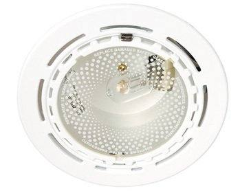
Representative photoLuminaire for metal-halide / halogen lamp
254_MAT_FLEX_70W_9003_RX7S
In stock since: 2017–2019
2,661 pcsRef #441
Luminaire for metal-halide / halogen lamp
UX-DOWNLIGHT_252_MAT_70W_9003_RX7S
In stock since: 2017
1,570 pcsRef #442
Luminaire for metal-halide / halogen lamp
UX-DOWNLIGHT_252_MAT_150W_9003_RX7S
In stock since: 2017
1,325 pcsRef #443
Luminaire for metal-halide / halogen lamp
254_MAT_FLEX_150W_9003_RX7S
In stock since: 2017–2019
915 pcsRef #444
Luminaire for metal-halide / halogen lamp
253_POLISHED_FLEX_1X35/70/150W_9003_G12
In stock since: 2014
851 pcsRef #445
Luminaire for metal-halide / halogen lamp
253_POLISHED_FLEX_1X35/70/150W_9006_G12
In stock since: 2017–2018
817 pcsRef #446
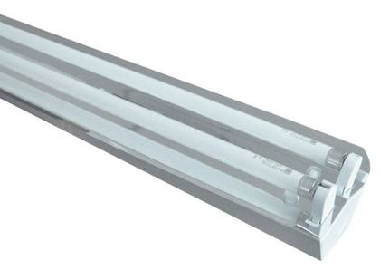
Representative photoLuminaire for fluorescent tubes
OPRG R12 T5 AL DEEP 35W MIRO7
In stock since: 2024
217 pcsRef #447
Luminaire for metal-halide / halogen lamp
JADA_MD70_YL6705B_J70W_RX7S_SYMMETRIC
In stock since: 2013–2015
97 pcsRef #448
Luminaire for metal-halide / halogen lamp
JADA_MD150_YL6705A_J150W_RX7S_SYMMETRIC
In stock since: 2013
95 pcsRef #449
Luminaire for metal-halide / halogen lamp
AD_DECOR_13_R7S_CR
In stock since: 2017–2019
94 pcsRef #450
Luminaire for metal-halide / halogen lamp
JADA_MT150_YL6705A_N150W_E40_SYMETRIC
In stock since: 2013–2015
93 pcsRef #451
Luminaire for metal-halide / halogen lamp
AD_DECOR_10_R7S_CR
In stock since: 2017
77 pcsRef #452
Luminaire for metal-halide / halogen lamp
JADA_MD70_YL6705B_J70W_RX7S_ASYMMETRIC
In stock since: 2014
69 pcsRef #453
Luminaire for metal-halide / halogen lamp
JADA_MD150_YL6705A_J150W_RX7S_ASYMMETRIC
In stock since: 2013
60 pcsRef #454
Luminaire for fluorescent tubes
JADA_FDH_YL6705C_Y2X14W_G5_ANTHRACITE
In stock since: 2013
48 pcsRef #455
Luminaire for metal-halide / halogen lamp
ALMA HDG_YL6513PF_H300-500W,RX7S_ANT
In stock since: 2015
48 pcsRef #456
Luminaire for fluorescent tubes
AD-DECOR 6 E27 CR 2X40W 0
In stock since: 2017
40 pcsRef #457
Luminaire for fluorescent tubes
AD-OVALE OS LA GRAY 1X80W,T5, EB,9006
In stock since: 2014
37 pcsRef #458
Luminaire for metal-halide / halogen lamp
AD_DECOR_12_R7S_CR
In stock since: 2017
35 pcsRef #459
Luminaire for metal-halide / halogen lamp
FLICK_MT_YL6605D_35W_G12_ANTHRACIT_800MM
In stock since: 2015
32 pcsRef #460
Luminaire for fluorescent tubes
HARMONY 2X14W,FDH,G5,ANODIZED SINGLEPOW
In stock since: 2014
26 pcsRef #461
Luminaire for fluorescent tubes
GENA_FDH_YL6711_Y1X21W_G5_ANTHRACITE
In stock since: 2015
23 pcsRef #462
Luminaire for metal-halide / halogen lamp
AD_DECOR_18_R7S_CR
In stock since: 2017
21 pcsRef #463
Luminaire for metal-halide / halogen lamp
AD_DECOR_5_R7S_CR
In stock since: 2017
21 pcsRef #464
More items without photo (28)
| Ref | Item | Type | Status | Qty |
|---|---|---|---|---|
| Ref #465 | COMFORT2_MDYL6408A_J1X70W_RX7S_ANTRHACIT In stock since: 2015 | Luminaire for metal-halide / halogen lamp | Complete luminaire | 14 |
| Ref #466 | AVIS-1_MT_YL6509A_J70W_RX7S_ANTHRACITE In stock since: 2013 | Luminaire for metal-halide / halogen lamp | Complete luminaire | 12 |
| Ref #467 | COMFORT-3_MD_YL6407A_J2X70W_RX7S_ANTHRAC In stock since: 2014 | Luminaire for metal-halide / halogen lamp | Complete luminaire | 12 |
| Ref #468 | UX-GINNY_2_MINI_1X4W_FDH_G5_BLACK In stock since: 2014 | Luminaire for fluorescent tubes | Complete luminaire | 10 |
| Ref #469 | UX-GINNY_1_MINI_1X5W_FBT_E14_BLACK In stock since: 2014 | Luminaire for fluorescent tubes | Complete luminaire | 8 |
| Ref #470 | UX-PLATINUM 222 1X35W,MT,G12,BLACK1 120 In stock since: 2017 | Luminaire for metal-halide / halogen lamp | Complete luminaire | 5 |
| Ref #471 | DAISY_1X20W_650MM_MT_PFJ5_GREY In stock since: 2015 | Luminaire for fluorescent tubes | Complete luminaire | 4 |
| Ref #472 | DAISY_2X24W_FRONTAL_1000MM_T5_G5_GREY In stock since: 2015 | Luminaire for fluorescent tubes | Complete luminaire | 4 |
| Ref #473 | AD_DECOR_14_R7S_CR In stock since: 2017 | Luminaire for metal-halide / halogen lamp | Complete luminaire | 3 |
| Ref #474 | UX-GALENA 1 1X26W,FSQ,G24Q3,GREY In stock since: 2017 | Luminaire for fluorescent tubes | Complete luminaire | 3 |
| Ref #475 | UX-JADE 1X26W,FSQ,G24Q3,GREY In stock since: 2017 | Luminaire for fluorescent tubes | Complete luminaire | 3 |
| Ref #476 | AD_DECOR_4_E14_CR_1X40W In stock since: 2017 | Luminaire for fluorescent tubes | Complete luminaire | 2 |
| Ref #477 | GENA_FDH_YL6711_Y1X14W_G5_RAL9003 In stock since: 2014 | Luminaire for fluorescent tubes | Complete luminaire | 2 |
| Ref #478 | AD-OVALE NOD PAR 2X36W,T8, MB 0 In stock since: 2017 | Luminaire for fluorescent tubes | Complete luminaire | 2 |
| Ref #479 | HARMONY_2X24W_FDH_G5_ANODIZED_AL In stock since: 2015 | Luminaire for fluorescent tubes | Complete luminaire | 2 |
| Ref #480 | UX-DOLOMITE 224 C 1X35W,MT,G12,8°,GREY In stock since: 2017 | Luminaire for metal-halide / halogen lamp | Complete luminaire | 2 |
| Ref #481 | COMFORT3_MD_YL6407A_J2X70W_RX7S_GREY7000 In stock since: 2014 | Luminaire for metal-halide / halogen lamp | Complete luminaire | 1 |
| Ref #482 | IDA_FDH_YL6708_Y1X21W_G5_ALU In stock since: 2015 | Luminaire for fluorescent tubes | Complete luminaire | 1 |
| Ref #483 | AD-OVALE O PAR 1X28W,T5,EB 0 In stock since: 2017 | Luminaire for fluorescent tubes | Complete luminaire | 1 |
| Ref #484 | AD-OVALE ODS LA 2X28W,T5, EB 0 In stock since: 2017 | Luminaire for fluorescent tubes | Complete luminaire | 1 |
| Ref #485 | AD-OVALE OP PRISMA GRAY 1X80W,T5,EB,900 In stock since: 2017 | Luminaire for fluorescent tubes | Complete luminaire | 1 |
| Ref #486 | AD-OVALE OW LB 1X28W,T5,EB 0 In stock since: 2017 | Luminaire for fluorescent tubes | Complete luminaire | 1 |
| Ref #487 | UX-EMERALD 200 1X35W,MT,G12,1X6°,GREY In stock since: 2017 | Luminaire for metal-halide / halogen lamp | Complete luminaire | 1 |
| Ref #488 | UX-EMERALD 200 2X35W,MT,G12,2X6°,GREY In stock since: 2017 | Luminaire for metal-halide / halogen lamp | Complete luminaire | 1 |
| Ref #489 | UX-FUTURO LED 1X23W,ET,1000LM/840,9006 In stock since: 2014 | Luminaire for fluorescent tubes | Complete luminaire | 1 |
| Ref #490 | UX-NAOS_WALL_SAND_2X55W,FSDH/2G11,EB A2 In stock since: 2014 | Luminaire for fluorescent tubes | Complete luminaire | 1 |
| Ref #491 | UX-SAPPHIRE 2 1X60W,HDG,R7S,GREY In stock since: 2017 | Luminaire for metal-halide / halogen lamp | Complete luminaire | 1 |
| Ref #492 | UX_EMERALD_SQU_SIN_EMISS_1X70W_MT_G12_G In stock since: 2017 | Luminaire for metal-halide / halogen lamp | Complete luminaire | 1 |
Track spotlights & 3-phase track systems 247 items · 27,012 pcs
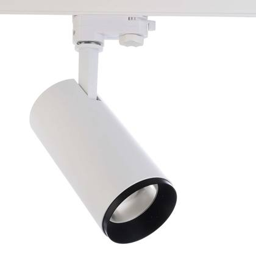
Representative photoTrack spotlight
UX-FUTURO_12_QR-111_SEDA
In stock since: 2017–2019
297 pcsRef #508
Track spotlight
UX-FUTURO_11_QR-111_SEDA
In stock since: 2017–2019
277 pcsRef #510
Track spotlight
UX-FUTURO_22_QR-111_SEDA
In stock since: 2017
64 pcsRef #543
Track spotlight
RTVS AIR E TRS 40° 405083 134 EDA W03
In stock since: 2024
37 pcsRef #560
Track spotlight
S-9000/112-LA-H
In stock since: 2018
25 pcsRef #570
Track spotlight
OGCX XTP PV1 MCD 450094 151 EDA W03
In stock since: 2023
23 pcsRef #571
Track spotlight
ELS TRS 34° 310094 132 EDA W03
In stock since: 2023
22 pcsRef #573
Track spotlight
UX-FUTURO_14_QR-111_SEDA
In stock since: 2017
20 pcsRef #576
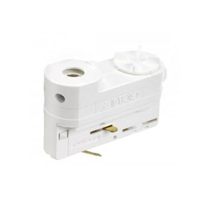
Representative photoTrack adapter / connector
PLASTIC_ADAPTER_1_WHITE
In stock since: 2013
4,284 pcsRef #493
Track adapter / connector
PLASTIC_ADAPTER_2_WHITE
In stock since: 2013
4,220 pcsRef #494
Track adapter / connector
PLASTIC_ADAPTER_3_WHITE
In stock since: 2018–2019
2,081 pcsRef #495
Track rail / track part
LISTA_XTS4100-1_GREY
In stock since: 2015–2017
1,690 pcsRef #496
Track adapter / connector
PLASTIC_ADAPTER_1_GREY
In stock since: 2017
1,218 pcsRef #497
Track adapter / connector
PLASTIC_ADAPTER_2_GREY
In stock since: 2017
1,125 pcsRef #498
Track adapter / connector
KONEKTOR_XTSA510-3_WHITE
In stock since: 2022–2025
879 pcsRef #499
Track adapter / connector
ADAPTER_UNIPRO_A75B_BLACK
In stock since: 2019–2021
783 pcsRef #500
Track adapter / connector
PLASTIC_ADAPTER_3_GREY
In stock since: 2017
745 pcsRef #501
Track adapter / connector
ADAPTER_XTSA68L-2_BLACK
In stock since: 2022
743 pcsRef #502
Track adapter / connector
STI 4CON W10 ADAPTER 3PHASE
In stock since: 2016–2021
611 pcsRef #503
Track adapter / connector
PLASTIC_ADAPTER_1_BLACK
In stock since: 2018
531 pcsRef #504
Track adapter / connector
PLASTIC_ADAPTER_2_BLACK
In stock since: 2018
460 pcsRef #505
Track adapter / connector
PLASTIC_ADAPTER_3_BLACK
In stock since: 2018
432 pcsRef #506
More items without photo (225)
| Ref | Item | Type | Status | Qty |
|---|---|---|---|---|
| Ref #588 | SAEDILPG 36 GCD ASY ___ 83 164 48V SSS In stock since: 2020 | Track spotlight | Complete luminaire | 13 |
| Ref #594 | EUTRAC_99-125_WITH_SHARP_LOGO_BLACK In stock since: 2013 | Track spotlight | Complete luminaire | 11 |
| Ref #595 | UNHL DWN TRD 170083 128 ECG W03 In stock since: 2015 | Track spotlight | Complete luminaire | 11 |
| Ref #596 | DATABUS_99-698-0 In stock since: 2014 | Track spotlight | Complete luminaire | 10 |
| Ref #601 | UX-FUTURO_12_QR-111_CIERNA In stock since: 2017 | Track spotlight | Complete luminaire | 10 |
| Ref #620 | OGCX XTP PV4 MCD 335084 139 ECG W03 In stock since: 2020 | Track spotlight | Complete luminaire | 8 |
| Ref #624 | LUMIPARTS LED SPOT LYNX MAXI HOUS WHITE In stock since: 2017 | Track spotlight | Complete luminaire | 7 |
| Ref #626 | MINA 200 GCD TRD 200083 26 ECG W10 In stock since: 2014 | Track spotlight | Complete luminaire | 7 |
| Ref #627 | TITANO GMD TRD 130085 110 ECG ANTR In stock since: 2015 | Track spotlight | Complete luminaire | 7 |
| Ref #631 | EUTRAC_99-125_WITH_SHARP_LOGO_WHITE In stock since: 2016 | Track spotlight | Complete luminaire | 6 |
| Ref #644 | MULTI_ADAPTER_99-759-1_WHITE In stock since: 2014 | Track spotlight | Complete luminaire | 4 |
| Ref #648 | ARN C M DI SSD 1060083 1104 EDA G06 In stock since: 2022 | Track spotlight | Complete luminaire | 4 |
| Ref #649 | LIGHT UP LED WCD TRD 40083 5 ECG INOX In stock since: 2014 | Track spotlight | Complete luminaire | 4 |
| Ref #650 | SAEDIG 9 WMD 40° ___ RGB 19 ___ G15 In stock since: 2017 | Track spotlight | Complete luminaire | 4 |
| Ref #651 | SAEDIG 9 WMD 60° ___ RGB 19 ___ G15 In stock since: 2015 | Track spotlight | Complete luminaire | 4 |
| Ref #652 | CADAN SUSP 40° 130083 10W DALI W16 In stock since: 2025 | Track spotlight | Complete luminaire | 3 |
| Ref #653 | CADAN SUSP 40° 140084 10W DALI B05 In stock since: 2025 | Track spotlight | Complete luminaire | 3 |
| Ref #654 | CADAN SUSP 40° 140084 10W DALI W16 In stock since: 2025 | Track spotlight | Complete luminaire | 3 |
| Ref #655 | CADAN SUSP 40° 225083 17W DALI B05 In stock since: 2025 | Track spotlight | Complete luminaire | 3 |
| Ref #656 | CADAN SUSP 40° 225083 17W DALI W16 In stock since: 2025 | Track spotlight | Complete luminaire | 3 |
| Ref #657 | CADAN SUSP 40° 235084 17W DALI B05 In stock since: 2025 | Track spotlight | Complete luminaire | 3 |
| Ref #658 | CADAN SUSP 40° 235084 17W DALI W16 In stock since: 2025 | Track spotlight | Complete luminaire | 3 |
| Ref #664 | CDN IB TRS 24° 390084 136 ECG W03 In stock since: 2019–2020 | Track spotlight | Complete luminaire | 3 |
| Ref #665 | OARN T S SSD OPD 660084 1116 EDA G06 In stock since: 2020 | Track spotlight | Complete luminaire | 3 |
| Ref #666 | SAEDIG 15 GCD 40° ___ RGB 115 EDX SSS In stock since: 2015 | Track spotlight | Complete luminaire | 3 |
| Ref #667 | SAEDILPG 27 GCD ASY ___ 83 148 48V SSS In stock since: 2017 | Track spotlight | Complete luminaire | 3 |
| Ref #668 | SAEDIS DI WMD 25° ___ 84 118 ECG G15 In stock since: 2015 | Track spotlight | Complete luminaire | 3 |
| Ref #670 | UX-FUTURO_11_QR-111_BIELA In stock since: 2015 | Track spotlight | Complete luminaire | 3 |
| Ref #672 | CADAN SUSP 24° 130083 10W DALI B05 In stock since: 2025 | Track spotlight | Complete luminaire | 2 |
| Ref #673 | CADAN SUSP 24° 130083 10W DALI W16 In stock since: 2025 | Track spotlight | Complete luminaire | 2 |
| Ref #674 | CADAN SUSP 24° 140084 10W DALI B05 In stock since: 2025 | Track spotlight | Complete luminaire | 2 |
| Ref #675 | CADAN SUSP 24° 140084 10W DALI W16 In stock since: 2025 | Track spotlight | Complete luminaire | 2 |
| Ref #676 | CADAN SUSP 24° 225083 17W DALI B05 In stock since: 2025 | Track spotlight | Complete luminaire | 2 |
| Ref #677 | CADAN SUSP 24° 225083 17W DALI W16 In stock since: 2025 | Track spotlight | Complete luminaire | 2 |
| Ref #678 | CADAN SUSP 24° 235084 17W DALI B05 In stock since: 2025 | Track spotlight | Complete luminaire | 2 |
| Ref #679 | CADAN SUSP 24° 235084 17W DALI W16 In stock since: 2025 | Track spotlight | Complete luminaire | 2 |
| Ref #681 | EUTRAC_99-125_WITH_SHARP_LOGO_GREY In stock since: 2013 | Track spotlight | Complete luminaire | 2 |
| Ref #687 | MILINE SL L TRS B90 405083 26W FIX B05 In stock since: 2025 | Track spotlight | Complete luminaire | 2 |
| Ref #694 | ARN C L DI SSD 1325083 1139 EDA G06 In stock since: 2022 | Track spotlight | Complete luminaire | 2 |
| Ref #695 | OCLE SSD TRD 545084 169 EDA W03 In stock since: 2015–2017 | Track spotlight | Complete luminaire | 2 |
| Ref #696 | SAEDIG 6 WMD 60° ___ 84 16 48V G15 In stock since: 2017 | Track spotlight | Complete luminaire | 2 |
| Ref #697 | UAVN TRS 15° FRT 240083 125 ECG W03 In stock since: 2017 | Track spotlight | Complete luminaire | 2 |
| Ref #698 | UAVN TRS 24° FRT 240083 125 ECG W03 In stock since: 2017 | Track spotlight | Complete luminaire | 2 |
| Ref #699 | ZPR II IB TRS 24° 390084 136 ECG W03 In stock since: 2020 | Track spotlight | Complete luminaire | 2 |
| Ref #701 | CADAN TRAX TRS 24° 130083 10W FIX W03 In stock since: 2024 | Track spotlight | Complete luminaire | 1 |
| Ref #709 | MILINE SL M TRS B90 325083 22W FIX B05 In stock since: 2025 | Track spotlight | Complete luminaire | 1 |
| Ref #711 | PRG DM B TRS 01-5 FIX W03 SP 3/11 In stock since: 2021 | Track spotlight | Complete luminaire | 1 |
| Ref #712 | PRG DM B TRS 01-8 DALI W03 SP 5/11 In stock since: 2021 | Track spotlight | Complete luminaire | 1 |
| Ref #722 | AIR II TRS 40° 250084 119 ECG W03 In stock since: 2018 | Track spotlight | Complete luminaire | 1 |
| Ref #723 | ARN C S SFD OPD 305083 155 ECG G05 In stock since: 2017 | Track spotlight | Complete luminaire | 1 |
| Ref #724 | ARN E S SFD OPD 430083 178 ECG B05 In stock since: 2019 | Track spotlight | Complete luminaire | 1 |
| Ref #725 | ARN Q M SFD OPD 420083 178 ECG G05 In stock since: 2017 | Track spotlight | Complete luminaire | 1 |
| Ref #726 | AVR TRS 24° 400083 135 ECG B05 In stock since: 2020 | Track spotlight | Complete luminaire | 1 |
| Ref #727 | AVR TRS 40° 250084 119 ECG W03 In stock since: 2018 | Track spotlight | Complete luminaire | 1 |
| Ref #728 | CDN IB TRS 40° 364082 136 ECG W03 In stock since: 2022 | Track spotlight | Complete luminaire | 1 |
| Ref #729 | ELS TRS 34° 145093 116 ECG B05 In stock since: 2021 | Track spotlight | Complete luminaire | 1 |
| Ref #730 | ELS TW TRS 30° 1800 9TW 127 EDA W03 In stock since: 2020 | Track spotlight | Complete luminaire | 1 |
| Ref #731 | OELS TRS 34° 285093 134 EDA W03 In stock since: 2021 | Track spotlight | Complete luminaire | 1 |
| Ref #732 | POLO2 LED GMD TRD __84 10 ECG G06 750MM In stock since: 2017 | Track spotlight | Complete luminaire | 1 |
| Ref #733 | SAEDIG 1 GCD 40° ___ 84 11 48V SSS In stock since: 2018 | Track spotlight | Complete luminaire | 1 |
| Ref #734 | SAEDIG 15 GCD ASY ___ RGB 115 EDX SSS In stock since: 2015 | Track spotlight | Complete luminaire | 1 |
| Ref #735 | SAEDIG DI WMD 25° ___ 84 124 ECG G15 In stock since: 2015 | Track spotlight | Complete luminaire | 1 |
| Ref #736 | SAEDIS1 GCD ___ ___ 84 11 48V G15 In stock since: 2015 | Track spotlight | Complete luminaire | 1 |
| Ref #739 | ZPR II IB TRS 40° 235084 121 ECG W03 In stock since: 2019 | Track spotlight | Complete luminaire | 1 |
| Ref #507 | DRZIAK_SKB16-3_WHITE In stock since: 2019–2023 | Track rail / track part | Accessory / system part | 320 |
| Ref #509 | SPOJKA_XTS21-1_GREY In stock since: 2018 | Track adapter / connector | Accessory / system part | 289 |
| Ref #511 | NIPPLE X1 BLACK ( M10 ) In stock since: 2019 | Track adapter / connector | Accessory / system part | 252 |
| Ref #512 | DRZIAK_SKB21-1_GREY In stock since: 2014 | Track rail / track part | Accessory / system part | 233 |
| Ref #513 | DRZIAK_SKB30-1_GREY In stock since: 2013 | Track rail / track part | Accessory / system part | 208 |
| Ref #514 | KONEKTOR_XTSA510-2_BLACK In stock since: 2022 | Track adapter / connector | Accessory / system part | 188 |
| Ref #515 | NIPPLE X1 WHITE ( M10 ) In stock since: 2021 | Track adapter / connector | Accessory / system part | 180 |
| Ref #516 | RETAINING_COLLAR_99-086-3_GREY In stock since: 2014 | Track adapter / connector | Accessory / system part | 178 |
| Ref #517 | ADAPTER_XTSA68L-3_WHITE In stock since: 2021 | Track adapter / connector | Accessory / system part | 176 |
| Ref #518 | STI NUT FOR NIPPLES M10 In stock since: 2017 | Track adapter / connector | Accessory / system part | 175 |
| Ref #519 | LISTA_XTS4100-3_WHITE In stock since: 2016–2017 | Track rail / track part | Accessory / system part | 165 |
| Ref #520 | DRZIAK_SKB10T-1_GREY In stock since: 2014 | Track rail / track part | Accessory / system part | 162 |
| Ref #521 | KONEKTOR_GAT69-2_BLACK In stock since: 2016 | Track adapter / connector | Accessory / system part | 150 |
| Ref #522 | LISTA_XTS4300-0_GREY ANODIZED ALU In stock since: 2014 | Track rail / track part | Accessory / system part | 134 |
| Ref #523 | KONEKTOR_XTSA510-1_GREY In stock since: 2022 | Track adapter / connector | Accessory / system part | 111 |
| Ref #524 | ADAPTER_GAC100-1_GREY In stock since: 2018 | Track adapter / connector | Accessory / system part | 102 |
| Ref #525 | STI CL.BRACKET FOR SUSP In stock since: 2016 | Track adapter / connector | Accessory / system part | 102 |
| Ref #526 | KONEKTOR_XTSA55/12_9_GREY In stock since: 2018 | Track adapter / connector | Accessory / system part | 100 |
| Ref #527 | SPOJKA_XTS40-1_GREY In stock since: 2015–2016 | Track adapter / connector | Accessory / system part | 99 |
| Ref #528 | DECLAN_MODUL_12,5W_3000K_M/F CONNECTOR In stock since: 2020 | Track adapter / connector | Accessory / system part | 98 |
| Ref #529 | SPOJKA_XTS38-2_BLACK In stock since: 2014 | Track adapter / connector | Accessory / system part | 95 |
| Ref #530 | STI 4CON ASYM W10 ADAPTER 3PHASE In stock since: 2024–2025 | Track adapter / connector | Accessory / system part | 88 |
| Ref #531 | NIPPLE_XTS58/8_9_GREY In stock since: 2022 | Track adapter / connector | Accessory / system part | 86 |
| Ref #532 | NIPPLE_XTSA57/8_9_ALUMINIUM In stock since: 2025 | Track adapter / connector | Accessory / system part | 85 |
| Ref #533 | DRZIAK_SKB30-3_WHITE In stock since: 2013 | Track rail / track part | Accessory / system part | 83 |
| Ref #534 | STI 6CON ASYM DALI G06 ADAPTER 3PHASE+CS In stock since: 2016 | Track adapter / connector | Accessory / system part | 82 |
| Ref #535 | NIPPLE X1 GREY ( M10 ) In stock since: 2019 | Track adapter / connector | Accessory / system part | 81 |
| Ref #536 | CONNECTOR_T_XTS36-1_GREY In stock since: 2014–2015 | Track adapter / connector | Accessory / system part | 78 |
| Ref #537 | CONNECTOR_NIPPLE_XTSA57/17_9 In stock since: 2016 | Track adapter / connector | Accessory / system part | 77 |
| Ref #538 | LISTA_XTS4100-0_GREY_ANODIZED_ALU In stock since: 2015 | Track rail / track part | Accessory / system part | 77 |
| Ref #539 | ADAPTER_UNIPRO_A79W_WHITE In stock since: 2025 | Track adapter / connector | Accessory / system part | 76 |
| Ref #540 | ADAPTER_UNIPRO_A75W_WHITE In stock since: 2020–2024 | Track adapter / connector | Accessory / system part | 70 |
| Ref #541 | ACU ALU NIPPLE M10X1 In stock since: 2020–2022 | Track adapter / connector | Accessory / system part | 67 |
| Ref #542 | 3-CCT PULSE DALI TRACK FLEXIBLE CORNER C In stock since: 2015 | Track rail / track part | Accessory / system part | 65 |
| Ref #544 | LISTA_XTS4100-2_BLACK In stock since: 2019 | Track rail / track part | Accessory / system part | 60 |
| Ref #545 | OPRG TBP BRACKET FOR TEMPEST LED In stock since: 2024 | Track rail / track part | Accessory / system part | 60 |
| Ref #546 | SPOJKA_GNC14-1_GREY In stock since: 2013 | Track adapter / connector | Accessory / system part | 59 |
| Ref #547 | SPOJKA_XTS40-2_BLACK In stock since: 2013 | Track adapter / connector | Accessory / system part | 51 |
| Ref #548 | SPOJKA_L_XTS34-1_GREY In stock since: 2019 | Track adapter / connector | Accessory / system part | 50 |
| Ref #549 | SPOJKA_XTS38-1_GREY In stock since: 2013–2015 | Track adapter / connector | Accessory / system part | 50 |
| Ref #550 | ADAPTER_GAC69-1_GREY In stock since: 2019 | Track adapter / connector | Accessory / system part | 49 |
| Ref #551 | LISTA_XTSF4300-0_GREY ANODIZED ALU In stock since: 2016 | Track rail / track part | Accessory / system part | 49 |
| Ref #552 | SPOJKA_L_XTS35-3_WHITE In stock since: 2019 | Track adapter / connector | Accessory / system part | 49 |
| Ref #553 | DECLAN_MODUL_12,5W_4000K_M/F CONNECTOR In stock since: 2021 | Track adapter / connector | Accessory / system part | 47 |
| Ref #554 | RETAINING_COLLAR_99-086-1_WHITE In stock since: 2017 | Track adapter / connector | Accessory / system part | 47 |
| Ref #555 | CONNECTOR_T_XTS36-2_BLACK In stock since: 2019 | Track adapter / connector | Accessory / system part | 43 |
| Ref #556 | KIT_DRZIAK_CELA_SNAPPY_II In stock since: 2021 | Track rail / track part | Accessory / system part | 42 |
| Ref #557 | SPOJKA_GNC14-3_WHITE In stock since: 2014 | Track adapter / connector | Accessory / system part | 40 |
| Ref #558 | RETAINING_COLLAR_99-086-2_BLACK In stock since: 2013 | Track adapter / connector | Accessory / system part | 38 |
| Ref #559 | LISTA_XTS4400-1_GREY In stock since: 2019 | Track rail / track part | Accessory / system part | 37 |
| Ref #561 | CONNECTOR_NIPPLE_XTSA57/12_9 In stock since: 2020 | Track adapter / connector | Accessory / system part | 33 |
| Ref #562 | LISTA_XTS4200-2_BLACK In stock since: 2021 | Track rail / track part | Accessory / system part | 33 |
| Ref #563 | LISTA_XTSF4200-1_GREY In stock since: 2014 | Track rail / track part | Accessory / system part | 33 |
| Ref #564 | CONNECTOR_T_XTS36-3_WHITE In stock since: 2019 | Track adapter / connector | Accessory / system part | 29 |
| Ref #565 | SPOJKA_XTS39-1_GREY In stock since: 2013–2015 | Track adapter / connector | Accessory / system part | 29 |
| Ref #566 | LISTA_GNC7300-1_GREY In stock since: 2013 | Track adapter / connector | Accessory / system part | 28 |
| Ref #567 | STI JOINT CONNECTOR W10 In stock since: 2022 | Track adapter / connector | Accessory / system part | 26 |
| Ref #568 | STI SC.GRIP+CAB3M+CLAMP+AU.GRIP In stock since: 2021 | Track adapter / connector | Accessory / system part | 26 |
| Ref #569 | ADAPTER_MULTI_POWER_99-125-1_WHITE In stock since: 2014 | Track adapter / connector | Accessory / system part | 25 |
| Ref #572 | LISTA_XTS4300-1_GREY In stock since: 2019 | Track rail / track part | Accessory / system part | 22 |
| Ref #574 | STI END FEED 1 B05 In stock since: 2024 | Track adapter / connector | Accessory / system part | 21 |
| Ref #575 | ADAPTER_GA69-3_WHITE In stock since: 2017 | Track adapter / connector | Accessory / system part | 20 |
| Ref #577 | DRZIAK_SKB40-1_GREY In stock since: 2017 | Track rail / track part | Accessory / system part | 19 |
| Ref #578 | SPOJKA_XTS37-1_GREY In stock since: 2013–2015 | Track adapter / connector | Accessory / system part | 19 |
| Ref #579 | STI JOINT CONNECTOR B05 In stock since: 2020–2021 | Track adapter / connector | Accessory / system part | 19 |
| Ref #580 | SPOJKA_GNC14-2_BLACK In stock since: 2015 | Track adapter / connector | Accessory / system part | 18 |
| Ref #581 | SPOJKA_XTS23-2_BLACK In stock since: 2017 | Track adapter / connector | Accessory / system part | 18 |
| Ref #582 | SPOJKA_XTS14-1_GREY In stock since: 2014–2017 | Track adapter / connector | Accessory / system part | 17 |
| Ref #583 | STI TRACK TUBE 2M B05 In stock since: 2022 | Track adapter / connector | Accessory / system part | 17 |
| Ref #584 | CONTROL_END_FEED_GNC12-3_WHITE In stock since: 2019 | Track adapter / connector | Accessory / system part | 15 |
| Ref #585 | DRZIAK_SKB16-1_GREY In stock since: 2020 | Track rail / track part | Accessory / system part | 15 |
| Ref #586 | SPOJKA_T_XTS39-3_WHITE In stock since: 2016 | Track adapter / connector | Accessory / system part | 15 |
| Ref #587 | LISTA_XTS4200-3_WHITE In stock since: 2021 | Track rail / track part | Accessory / system part | 13 |
| Ref #589 | ADAPTER_MULTI_POWER_99-125-3_GREY In stock since: 2014 | Track adapter / connector | Accessory / system part | 12 |
| Ref #590 | SPOJKA_L_XTS35-2_BLACK In stock since: 2019 | Track adapter / connector | Accessory / system part | 12 |
| Ref #591 | XTSA67-3_ADAPTER_16A_100N_WHITE In stock since: 2017 | Track adapter / connector | Accessory / system part | 12 |
| Ref #592 | ADAPTER_GA100_3_WHITE In stock since: 2019–2020 | Track adapter / connector | Accessory / system part | 11 |
| Ref #593 | ADAPTER_UNIPRO_A75G_GREY In stock since: 2020–2022 | Track adapter / connector | Accessory / system part | 11 |
| Ref #597 | DRZIAK_SKB18_1_GREY In stock since: 2016 | Track rail / track part | Accessory / system part | 10 |
| Ref #598 | KONEKTOR_GB41-1_GREY In stock since: 2013 | Track adapter / connector | Accessory / system part | 10 |
| Ref #599 | STI TRACK TUBE 2M W10 In stock since: 2024 | Track adapter / connector | Accessory / system part | 10 |
| Ref #600 | STI TRACK TUBE 3M W10 In stock since: 2024 | Track adapter / connector | Accessory / system part | 10 |
| Ref #602 | ADAPTER_GAC100-3_WHITE In stock since: 2022 | Track adapter / connector | Accessory / system part | 9 |
| Ref #603 | DRZIAK_SKB30-2_BLACK In stock since: 2013 | Track rail / track part | Accessory / system part | 9 |
| Ref #604 | KONEKTOR_GB2100-1_GREY In stock since: 2013 | Track adapter / connector | Accessory / system part | 9 |
| Ref #605 | KONEKTOR_GB67-1_GREY In stock since: 2016 | Track adapter / connector | Accessory / system part | 9 |
| Ref #606 | LISTA_GNC7200-1_GREY In stock since: 2013 | Track adapter / connector | Accessory / system part | 9 |
| Ref #607 | LISTA_XTS4200-1_GREY In stock since: 2020 | Track rail / track part | Accessory / system part | 9 |
| Ref #608 | LISTA_XTSC6300-3_WHITE In stock since: 2019 | Track rail / track part | Accessory / system part | 9 |
| Ref #609 | SPOJKA_XTS21-3_WHITE In stock since: 2022 | Track adapter / connector | Accessory / system part | 9 |
| Ref #610 | SPOJKA_XTS23-3_WHITE In stock since: 2014 | Track adapter / connector | Accessory / system part | 9 |
| Ref #611 | DRZIAK_SKB16-2_BLACK In stock since: 2018 | Track rail / track part | Accessory / system part | 8 |
| Ref #612 | LISTA_XTS4400-0_GREY ANODIZED ALU In stock since: 2016 | Track rail / track part | Accessory / system part | 8 |
| Ref #613 | PULSE_CONTROL_ADAPTER_GAC600-3_WHITE In stock since: 2022 | Track adapter / connector | Accessory / system part | 8 |
| Ref #614 | STI 6CON ASYM DALI W10 ADAPTER 3PHASE+CS In stock since: 2023–2024 | Track adapter / connector | Accessory / system part | 8 |
| Ref #615 | STI END FEED 1 W10 In stock since: 2022 | Track adapter / connector | Accessory / system part | 8 |
| Ref #616 | STI GASKET FOR END FEED W10 In stock since: 2025 | Track adapter / connector | Accessory / system part | 8 |
| Ref #617 | STI TRACK BRACKET S-9000/322-LA In stock since: 2025 | Track adapter / connector | Accessory / system part | 8 |
| Ref #618 | STI TRACK CLAMP B05 In stock since: 2017 | Track adapter / connector | Accessory / system part | 8 |
| Ref #619 | LISTA_GNC7100-1_GREY In stock since: 2014 | Track adapter / connector | Accessory / system part | 8 |
| Ref #621 | TRACK_AVAN_35W_3000K_WHITE_W/O_REF In stock since: 2017 | Track rail / track part | Accessory / system part | 8 |
| Ref #622 | DRZIAK_SKB10-1_GREY In stock since: 2020 | Track rail / track part | Accessory / system part | 7 |
| Ref #623 | LISTA_GNC11-2_BLACK In stock since: 2016 | Track adapter / connector | Accessory / system part | 7 |
| Ref #625 | 8 POLE CONNECTOR FEMALE In stock since: 2018 | Track adapter / connector | Accessory / system part | 7 |
| Ref #628 | ADAPTER_UNIPRO_A70G_GREY In stock since: 2015 | Track adapter / connector | Accessory / system part | 6 |
| Ref #629 | DALI_TRACK_4M_GNC7400-3_WHITE In stock since: 2015 | Track adapter / connector | Accessory / system part | 6 |
| Ref #630 | DRZIAK_SKB10-2_CEILING_CLAMP_BLACK In stock since: 2020 | Track rail / track part | Accessory / system part | 6 |
| Ref #632 | 8 POLE CONNECTOR MALE In stock since: 2018 | Track adapter / connector | Accessory / system part | 6 |
| Ref #633 | STI GASKET FOR END FEED B05 In stock since: 2022 | Track adapter / connector | Accessory / system part | 6 |
| Ref #634 | GNC34-3_CONTROL_L_FEED_WHITE In stock since: 2015 | Track adapter / connector | Accessory / system part | 5 |
| Ref #635 | LISTA_XTS4400-2_BLACK In stock since: 2019 | Track rail / track part | Accessory / system part | 5 |
| Ref #636 | STI END FEED 2 W10 In stock since: 2025 | Track adapter / connector | Accessory / system part | 5 |
| Ref #637 | STI TRACK TUBE 2M ELG In stock since: 2018 | Track adapter / connector | Accessory / system part | 5 |
| Ref #638 | 2718_TRACK_AVIOR_POLAKOVA In stock since: 2016 | Track rail / track part | Accessory / system part | 5 |
| Ref #639 | KONEKTOR_GB36-1_GREY In stock since: 2013 | Track adapter / connector | Accessory / system part | 4 |
| Ref #640 | KONEKTOR_XTS623-3_WHITE In stock since: 2015 | Track adapter / connector | Accessory / system part | 4 |
| Ref #641 | LISTA_XTSC6200-2_BLACK In stock since: 2016 | Track rail / track part | Accessory / system part | 4 |
| Ref #642 | LISTA_XTSCF6300-2_BLACK In stock since: 2015 | Track rail / track part | Accessory / system part | 4 |
| Ref #643 | LISTA_XTSF4100-1_GREY In stock since: 2020 | Track rail / track part | Accessory / system part | 4 |
| Ref #645 | SPOJKA_XTSC614-2_BLACK In stock since: 2016 | Track adapter / connector | Accessory / system part | 4 |
| Ref #646 | STI CEILING CLAMP STEEL COLOUR In stock since: 2023 | Track adapter / connector | Accessory / system part | 4 |
| Ref #647 | STI RCD TRACK TUBE 3M W10 In stock since: 2021 | Track adapter / connector | Accessory / system part | 4 |
| Ref #659 | LISTA_GNC7100-2_BLACK In stock since: 2013 | Track adapter / connector | Accessory / system part | 3 |
| Ref #660 | SPOJKA_L_XTSC634-3_WHITE In stock since: 2019 | Track adapter / connector | Accessory / system part | 3 |
| Ref #661 | SPOJKA_OTOCNA_XTS24-3_WHITE In stock since: 2022 | Track adapter / connector | Accessory / system part | 3 |
| Ref #662 | SPOJKA_T_XTSC637-2_BLACK In stock since: 2015 | Track adapter / connector | Accessory / system part | 3 |
| Ref #663 | STI RCD TRACK TUBE 2M W10 In stock since: 2021 | Track adapter / connector | Accessory / system part | 3 |
| Ref #669 | T-SPLITTER CONNECTOR 8PIN In stock since: 2018 | Track adapter / connector | Accessory / system part | 3 |
| Ref #671 | ADAPTER_UNIPRO_A70W_WHITE In stock since: 2018 | Track adapter / connector | Accessory / system part | 2 |
| Ref #680 | DRZIAK_SKB18_2_BLACK In stock since: 2016 | Track rail / track part | Accessory / system part | 2 |
| Ref #682 | KONEKTOR_GB66CT In stock since: 2013 | Track adapter / connector | Accessory / system part | 2 |
| Ref #683 | LISTA_GNC7200-3_WHITE In stock since: 2015 | Track adapter / connector | Accessory / system part | 2 |
| Ref #684 | LISTA_GNC7300-2_BLACK In stock since: 2015 | Track adapter / connector | Accessory / system part | 2 |
| Ref #685 | LISTA_XTSC6300-1_GREY In stock since: 2016 | Track rail / track part | Accessory / system part | 2 |
| Ref #686 | LISTA_XTSC6300-2_BLACK In stock since: 2016 | Track rail / track part | Accessory / system part | 2 |
| Ref #688 | SPOJKA_L_XTSC634-2_BLACK In stock since: 2015 | Track adapter / connector | Accessory / system part | 2 |
| Ref #689 | STI ADJUSTABLE CORNER W10 In stock since: 2025 | Track adapter / connector | Accessory / system part | 2 |
| Ref #690 | STI CEILING DALI ADAPTER BASE W10 In stock since: 2018–2019 | Track adapter / connector | Accessory / system part | 2 |
| Ref #691 | STI EXT CAB LOCK B05 + PLASTIC SCREW In stock since: 2024 | Track adapter / connector | Accessory / system part | 2 |
| Ref #692 | STI INTERNAL L-FEED 1 W10 In stock since: 2025 | Track adapter / connector | Accessory / system part | 2 |
| Ref #693 | STI RCD TRACK TUBE 4M W10 In stock since: 2021 | Track adapter / connector | Accessory / system part | 2 |
| Ref #700 | ADAPTER_GAC100-2_BLACK In stock since: 2021 | Track adapter / connector | Accessory / system part | 1 |
| Ref #702 | LISTA_GB2200-2_BLACK In stock since: 2017 | Track rail / track part | Accessory / system part | 1 |
| Ref #703 | LISTA_XTS4200-0_GREY ANODIZED ALU In stock since: 2016 | Track rail / track part | Accessory / system part | 1 |
| Ref #704 | LISTA_XTSC6100-3_WHITE In stock since: 2020 | Track rail / track part | Accessory / system part | 1 |
| Ref #705 | LISTA_XTSC6200-3_WHITE In stock since: 2019 | Track rail / track part | Accessory / system part | 1 |
| Ref #706 | LISTA_XTSC6400-3_WHITE In stock since: 2016 | Track rail / track part | Accessory / system part | 1 |
| Ref #707 | LISTA_XTSCF6200-2_BLACK In stock since: 2015 | Track rail / track part | Accessory / system part | 1 |
| Ref #708 | LISTA_XTSCF6200-3_WHITE In stock since: 2015 | Track rail / track part | Accessory / system part | 1 |
| Ref #710 | PLASTIC_ADAPTER_CIERNY In stock since: 2021 | Track adapter / connector | Accessory / system part | 1 |
| Ref #713 | SPOJKA XTSC 623-3 WHITE In stock since: 2016 | Track adapter / connector | Accessory / system part | 1 |
| Ref #714 | SPOJKA_L_XTSC635-1_GREY In stock since: 2016 | Track adapter / connector | Accessory / system part | 1 |
| Ref #715 | STI 4CON ASYM B05 ADAPTER 3PHASE In stock since: 2024 | Track adapter / connector | Accessory / system part | 1 |
| Ref #716 | STI 4CON G06 ADAPTER 3PHASE In stock since: 2016 | Track adapter / connector | Accessory / system part | 1 |
| Ref #717 | STI CEILING ADAPTER BASE W10 In stock since: 2017 | Track adapter / connector | Accessory / system part | 1 |
| Ref #718 | STI INST. TOOL FOR ADAPTER WIRING In stock since: 2017 | Track adapter / connector | Accessory / system part | 1 |
| Ref #719 | STI SUSP HOOK W10 In stock since: 2016 | Track adapter / connector | Accessory / system part | 1 |
| Ref #720 | XTSA67S-3 In stock since: 2015 | Track adapter / connector | Accessory / system part | 1 |
| Ref #721 | 2718_TRACK_AVIOR_9240+402_POLAKOVA In stock since: 2016 | Track rail / track part | Accessory / system part | 1 |
| Ref #737 | TRACK_AVAN_25W_3000K_WHITE_W/O_REF In stock since: 2017 | Track rail / track part | Accessory / system part | 1 |
| Ref #738 | TRACK_AVAN_35W_4000K_WHITE_W/O_REF In stock since: 2017 | Track rail / track part | Accessory / system part | 1 |
Emergency lighting 76 items · 974 pcs
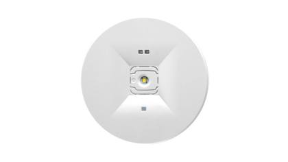
Representative photoEmergency luminaire / exit sign
UEMY 2994 SSD 2W 3H M/NM AUTOTEST
In stock since: 2022
119 pcsRef #740
Emergency luminaire / exit sign
UEMY 2954 3W LED 3H IP40 M/NM AUTOTEST
In stock since: 2019
86 pcsRef #741
Emergency luminaire / exit sign
UX-EMERGENCY_2604_3H/NM_IP65_1X1,2W_LED
In stock since: 2015
50 pcsRef #742
Emergency luminaire / exit sign
UX-EMERGENCY_2722_3H/NM
In stock since: 2016
50 pcsRef #743
Emergency luminaire / exit sign
UX-EMERGENCY_2772_3H/NM
In stock since: 2016
50 pcsRef #744
Emergency luminaire / exit sign
UEMY 2931 1W LED NM W/O BATTERY
In stock since: 2019
48 pcsRef #745
Emergency luminaire / exit sign
UEMY 2931 3H/NM
In stock since: 2022–2024
43 pcsRef #746
Emergency luminaire / exit sign
UEMY 2933 1H/NM
In stock since: 2021
39 pcsRef #747
Emergency luminaire / exit sign
UEMY 2986 3H IP65 M/NM AUTOTEST
In stock since: 2019
38 pcsRef #748
Emergency luminaire / exit sign
PC KRYT NA EMERGENCY PRE RADU 2900
In stock since: 2015
36 pcsRef #749
Emergency luminaire / exit sign
UEMY 2935 1W LED 3H/NM HYDRANT
In stock since: 2016
31 pcsRef #750
Emergency luminaire / exit sign
UX-EMERGENCY_2751_1,5H/NM_EXIT
In stock since: 2017
31 pcsRef #751
Emergency luminaire / exit sign
EM_TMT_VIP_380_PRO_I_4,0_AH_6,0_V
In stock since: 2016
26 pcsRef #752
Emergency luminaire / exit sign
UX-EMERGENCY_2702_3H/NM
In stock since: 2015
25 pcsRef #753
More items without photo (62)
| Ref | Item | Type | Status | Qty |
|---|---|---|---|---|
| Ref #754 | UEMY 2904 1H PLEXI LED 1,2W 3,6V M 1AH_G In stock since: 2021 | Emergency luminaire / exit sign | Complete luminaire | 19 |
| Ref #755 | UX-EMERGENCY_2911_1H_1,2W_3,6V_1000MAH In stock since: 2022 | Emergency luminaire / exit sign | Complete luminaire | 18 |
| Ref #756 | UPLASTIC PLAST_2812_3H/M_EXIT In stock since: 2017 | Emergency luminaire / exit sign | Complete luminaire | 18 |
| Ref #757 | UX-EMERGENCY_2612_1H/NM In stock since: 2015 | Emergency luminaire / exit sign | Complete luminaire | 14 |
| Ref #758 | UX-EMERGENCY_2781_3H/M_L/R In stock since: 2017 | Emergency luminaire / exit sign | Complete luminaire | 14 |
| Ref #759 | UX-EMERGENCY_2752_3H/NM_DOWN In stock since: 2017 | Emergency luminaire / exit sign | Complete luminaire | 12 |
| Ref #760 | UX-EMERGENCY_2735_3H/M In stock since: 2015 | Emergency luminaire / exit sign | Complete luminaire | 11 |
| Ref #761 | UX-EMERGENCY_2761_3H/M_UP In stock since: 2017 | Emergency luminaire / exit sign | Complete luminaire | 10 |
| Ref #762 | UEMY 2911 1H EXIT LED 1,2W 3,6V NM 1AH In stock since: 2022 | Emergency luminaire / exit sign | Complete luminaire | 9 |
| Ref #763 | UEMY 3227 2,5W IP20 CBS In stock since: 2017 | Emergency luminaire / exit sign | Complete luminaire | 9 |
| Ref #764 | UX-EMERGENCY_2902_2H_1,2W_3,6V_1AH_GREY In stock since: 2016 | Emergency luminaire / exit sign | Complete luminaire | 9 |
| Ref #765 | UX-EMERGENCY_2811_3H/M_WC In stock since: 2016 | Emergency luminaire / exit sign | Complete luminaire | 8 |
| Ref #766 | UX-EMERGENCY_2754_1,5H/M_L/R In stock since: 2017 | Emergency luminaire / exit sign | Complete luminaire | 8 |
| Ref #767 | UX-EMERGENCY_2762_3H/M_DOWN 110-130V In stock since: 2017 | Emergency luminaire / exit sign | Complete luminaire | 8 |
| Ref #768 | UX-EMERGENCY_2752_3H/NM_DOWN_110-130V In stock since: 2017 | Emergency luminaire / exit sign | Complete luminaire | 7 |
| Ref #769 | UX-EMERGENCY_2834_1H/M In stock since: 2017 | Emergency luminaire / exit sign | Complete luminaire | 7 |
| Ref #770 | UEMY 2851 3H/NM WMD In stock since: 2021 | Emergency luminaire / exit sign | Complete luminaire | 6 |
| Ref #771 | UEMY 2951 1,5H IP40 M/NM In stock since: 2017 | Emergency luminaire / exit sign | Complete luminaire | 6 |
| Ref #772 | UEMY 3111 2W 1H IP65 M/NM MANUAL TEST In stock since: 2017 | Emergency luminaire / exit sign | Complete luminaire | 6 |
| Ref #773 | UX-EMERGENCY_2822_3H/NM In stock since: 2017 | Emergency luminaire / exit sign | Complete luminaire | 6 |
| Ref #774 | EMY_3122_6W_3H_IP65_AUTOTEST In stock since: 2020 | Emergency luminaire / exit sign | Complete luminaire | 5 |
| Ref #775 | UX-EMERGENCY 2771 1,5H/NM,3W 4 ZÁKL PIC In stock since: 2015 | Emergency luminaire / exit sign | Complete luminaire | 5 |
| Ref #776 | UX-EMERGENCY_2613_3H/M_1X2W_LED In stock since: 2017 | Emergency luminaire / exit sign | Complete luminaire | 5 |
| Ref #777 | UX-EMERGENCY_2741_1,5H/NM In stock since: 2017 | Emergency luminaire / exit sign | Complete luminaire | 5 |
| Ref #778 | EM_TMT_VIP_ST_358_IE_4,0_AH_4,8_V In stock since: 2016 | Emergency luminaire / exit sign | Complete luminaire | 4 |
| Ref #779 | UEMY 2992 SSD 2W 3H M/NM In stock since: 2022 | Emergency luminaire / exit sign | Complete luminaire | 4 |
| Ref #780 | UX-EMERGENCY_2752_3H/NM_EXIT In stock since: 2015 | Emergency luminaire / exit sign | Complete luminaire | 4 |
| Ref #781 | UX-EMERGENCY_2782_3H/M_EXIT In stock since: 2016 | Emergency luminaire / exit sign | Complete luminaire | 4 |
| Ref #782 | UX_EMERGENCY_2755_3H/M_DOWN In stock since: 2014 | Emergency luminaire / exit sign | Complete luminaire | 4 |
| Ref #783 | UX-EMERGENCY_2611_1H/M In stock since: 2017 | Emergency luminaire / exit sign | Complete luminaire | 4 |
| Ref #784 | UX-EMERGENCY_2752_3H/NM_L/R_110-130V In stock since: 2017 | Emergency luminaire / exit sign | Complete luminaire | 4 |
| Ref #785 | UX-EMERGENCY_2755_3H/M In stock since: 2017 | Emergency luminaire / exit sign | Complete luminaire | 4 |
| Ref #786 | ETM 60.39LAW NM 3H WHITE In stock since: 2017 | Emergency luminaire / exit sign | Complete luminaire | 3 |
| Ref #787 | UX-EMERGENCY_2775_3H/M In stock since: 2017 | Emergency luminaire / exit sign | Complete luminaire | 3 |
| Ref #788 | UX-EMERGENCY_2782_3H/M_DOWN_127V_60HZ In stock since: 2017 | Emergency luminaire / exit sign | Complete luminaire | 3 |
| Ref #789 | EMY 3229 4,5W IP65 CBS In stock since: 2023 | Emergency luminaire / exit sign | Complete luminaire | 2 |
| Ref #790 | EM_TMT_VIP_ST_336_IE_4,0_AH_3,6_V In stock since: 2016 | Emergency luminaire / exit sign | Complete luminaire | 2 |
| Ref #791 | UX-EMERGENCY_2714_1,5H/M In stock since: 2015 | Emergency luminaire / exit sign | Complete luminaire | 2 |
| Ref #792 | UX-EMERGENCY_2716_1,5H/NM In stock since: 2016 | Emergency luminaire / exit sign | Complete luminaire | 2 |
| Ref #793 | UX-EMERGENCY_2824_1H/M In stock since: 2015 | Emergency luminaire / exit sign | Complete luminaire | 2 |
| Ref #794 | UX-EMERGENCY_2831_1H/NM In stock since: 2015 | Emergency luminaire / exit sign | Complete luminaire | 2 |
| Ref #795 | UX-EMERGENCY_2754_1,5H/M_DOWN In stock since: 2017 | Emergency luminaire / exit sign | Complete luminaire | 2 |
| Ref #796 | UX-EMERGENCY_2755_1H/M_EXIT In stock since: 2017 | Emergency luminaire / exit sign | Complete luminaire | 2 |
| Ref #797 | UX_EMERGENCY_2811_3H/M_/CLEAN_PVC In stock since: 2017 | Emergency luminaire / exit sign | Complete luminaire | 2 |
| Ref #798 | EMY_3121_2W_3H_IP65_AUTOTEST In stock since: 2020 | Emergency luminaire / exit sign | Complete luminaire | 1 |
| Ref #799 | EM_TMT_VIP_380_PRO_AT_4,0_AH_6,0_V In stock since: 2018 | Emergency luminaire / exit sign | Complete luminaire | 1 |
| Ref #800 | EM_TMT_VIP_ST_136_IE_1,5_AH_3,6_V In stock since: 2016 | Emergency luminaire / exit sign | Complete luminaire | 1 |
| Ref #801 | EM_TMT_VIP_ST_136_IE_120/50_1,5_AH_3,6_V In stock since: 2016 | Emergency luminaire / exit sign | Complete luminaire | 1 |
| Ref #802 | EM_TMT_VIP_ST_136_IE_127_1,5_AH_3,6_V In stock since: 2016 | Emergency luminaire / exit sign | Complete luminaire | 1 |
| Ref #803 | EXIT S IP65 CB 335LM 2W WHITE In stock since: 2024 | Emergency luminaire / exit sign | Complete luminaire | 1 |
| Ref #804 | UEMY 2903 3H PLEXI LED 1,2W 3,6V NM_G In stock since: 2022 | Emergency luminaire / exit sign | Complete luminaire | 1 |
| Ref #805 | UEMY 2987 3W 24V IP65 CBS In stock since: 2023 | Emergency luminaire / exit sign | Complete luminaire | 1 |
| Ref #806 | UEMY 3222 2,5W 3H IP20 M/NM MANUAL TEST In stock since: 2022 | Emergency luminaire / exit sign | Complete luminaire | 1 |
| Ref #807 | UEMY 3226 4,5W 3H IP20 M/NM AUTO TEST In stock since: 2021 | Emergency luminaire / exit sign | Complete luminaire | 1 |
| Ref #808 | UX-EMERGENCY 2811 3H/M DOWN BEZ PANAKA 0 In stock since: 2014 | Emergency luminaire / exit sign | Complete luminaire | 1 |
| Ref #809 | UX-EMERGENCY_2601_1H/M_IP65_1X1,2W_LED In stock since: 2022 | Emergency luminaire / exit sign | Complete luminaire | 1 |
| Ref #810 | UX-EMERGENCY_2711_1,5H/NM In stock since: 2016 | Emergency luminaire / exit sign | Complete luminaire | 1 |
| Ref #811 | UX-EMERGENCY_2712_3H/NM In stock since: 2015 | Emergency luminaire / exit sign | Complete luminaire | 1 |
| Ref #812 | UX-EMERGENCY_2762_3H/M_DOWN In stock since: 2016 | Emergency luminaire / exit sign | Complete luminaire | 1 |
| Ref #813 | UX-EMERGENCY_2913_3H_1,2W_3,6V_NM_1,5AH In stock since: 2020 | Emergency luminaire / exit sign | Complete luminaire | 1 |
| Ref #814 | UX-EMERGENCY_2914_1H_1,2W_3,6V_1000MAH In stock since: 2022 | Emergency luminaire / exit sign | Complete luminaire | 1 |
| Ref #815 | VCL-W001 25/30W-EM In stock since: 2025 | Emergency luminaire / exit sign | Complete luminaire | 1 |
UV-C disinfection units 10 items · 291 pcs
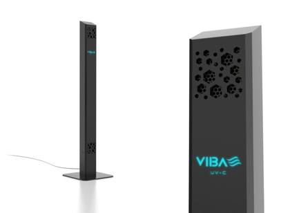
Product photoUV-C disinfection luminaire
VIBA UV-C POLE BLACK
In stock since: 2021–2022
225 pcsRef #816
UV-C disinfection luminaire
VIBA UV-C POLE WHITE
In stock since: 2021–2022
33 pcsRef #817
More items without photo (8)
| Ref | Item | Type | Status | Qty |
|---|---|---|---|---|
| Ref #818 | VIBA UV-C PANEL PR1 WHITE In stock since: 2022–2023 | UV-C disinfection luminaire | Complete luminaire | 10 |
| Ref #819 | VIBA UV-C WALL BLACK In stock since: 2021 | UV-C disinfection luminaire | Complete luminaire | 5 |
| Ref #820 | VIBA UV-C POLE WHITE In stock since: 2021 | UV-C disinfection luminaire | Complete luminaire | 4 |
| Ref #821 | VIBA UV-C POLE 2X36W/2W B05 In stock since: 2021 | UV-C disinfection luminaire | Complete luminaire | 4 |
| Ref #822 | VIBA UV-C POLE BLACK In stock since: 2021 | UV-C disinfection luminaire | Complete luminaire | 3 |
| Ref #823 | VIBA UV-C POLE 2X36W/2W W03 In stock since: 2021 | UV-C disinfection luminaire | Complete luminaire | 3 |
| Ref #824 | VIBA UV-C WALL F/DO WHITE In stock since: 2021 | UV-C disinfection luminaire | Complete luminaire | 3 |
| Ref #825 | VIBA UV-C PANEL PV1 WHITE In stock since: 2021 | UV-C disinfection luminaire | Complete luminaire | 1 |
Suspension & mounting accessories 69 items · 33,112 pcs
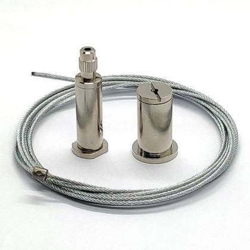
Representative photoSuspension wire / mounting kit
KIT_ZAVES_TORNADO
In stock since: 2017–2021
6,138 pcsRef #826
Suspension wire / mounting kit
ZAVES_UNI_UZKY_MODUL_W008_M6
In stock since: 2025
3,277 pcsRef #827
Suspension wire / mounting kit
LANKO L=1500 D1,5 ZART 5X10 VOLNY POZINK
In stock since: 2018
3,178 pcsRef #828
Suspension wire / mounting kit
LANKO L=1500MM D1,25 ZART 7X7 VOLNY UNI
In stock since: 2024–2025
2,614 pcsRef #829
Suspension wire / mounting kit
LANKO L=2500MM D1,25 ZART 7X7 VOLNY UNI
In stock since: 2025
2,334 pcsRef #830
Suspension wire / mounting kit
LENO_2400_ERS_CLIPS
In stock since: 2018
1,911 pcsRef #831
Suspension wire / mounting kit
GRIPPER_BELL
In stock since: 2022
1,712 pcsRef #832
Suspension wire / mounting kit
LANKO L=2000 D1,5 ZART 5X10 VOLNY POZINK
In stock since: 2017–2019
1,607 pcsRef #833
Suspension wire / mounting kit
LANKO L=2000MM D1,25 ZART 7X7 VOLNY UNI
In stock since: 2021–2025
1,320 pcsRef #834
Suspension wire / mounting kit
GRIPPER_CCS_PB
In stock since: 2014
1,269 pcsRef #835
Suspension wire / mounting kit
SKB11WLC_MOUNT_CLIP_FOR 2,4MM_WIRE GREY
In stock since: 2018
1,243 pcsRef #836
Suspension wire / mounting kit
ANA SUSPENSION 1,50M
In stock since: 2019
986 pcsRef #837
Suspension wire / mounting kit
LANKO L1000 D1,25 OKO-VOLNY
In stock since: 2017
540 pcsRef #838
Suspension wire / mounting kit
LANKO L=2500 D1,5 ZART 5X10 VOLNY POZINK
In stock since: 2017–2018
513 pcsRef #839
Suspension wire / mounting kit
SPW11SK-1_SUSPENSION_KIT_1,5M_GREY
In stock since: 2015–2019
491 pcsRef #840
Suspension wire / mounting kit
ZAVES_UNI_W004
In stock since: 2023–2025
476 pcsRef #841
Suspension wire / mounting kit
DRZIAK_ZAVESU_SP4R-3_WHITE
In stock since: 2016
465 pcsRef #842
Suspension wire / mounting kit
CONICAL_GRIPPER
In stock since: 2014
461 pcsRef #843
More items without photo (51)
| Ref | Item | Type | Status | Qty |
|---|---|---|---|---|
| Ref #844 | STI SC.GRIP+CUPW10+CAB5M+BR+AU.GRIP In stock since: 2016 | Suspension wire / mounting kit | Accessory / system part | 372 |
| Ref #845 | ZAVES_AVANT_M5_ZAVIT_AL_LOOK In stock since: 2015 | Suspension wire / mounting kit | Accessory / system part | 232 |
| Ref #846 | LANKO L=3000MM D1,25 ZART 7X7 VOLNY UNI In stock since: 2024 | Suspension wire / mounting kit | Accessory / system part | 200 |
| Ref #847 | ZAVES_UNI_UZKY_MODUL_W008 M4 In stock since: 2021–2022 | Suspension wire / mounting kit | Accessory / system part | 182 |
| Ref #848 | STI CUPB05 FOR CABLE In stock since: 2016 | Suspension wire / mounting kit | Accessory / system part | 152 |
| Ref #849 | ACS_TDO_V_M_INOX_CLIPS_8PCS In stock since: 2022 | Suspension wire / mounting kit | Accessory / system part | 142 |
| Ref #850 | ZAVES_SPW1-2/5M_BLACK In stock since: 2018 | Suspension wire / mounting kit | Accessory / system part | 127 |
| Ref #851 | STI CLAMP+CUPB05+CAB8M+END+FIX.CLAMP In stock since: 2018 | Suspension wire / mounting kit | Accessory / system part | 114 |
| Ref #852 | STI CL.BR+SC.GRIP+CUPW10+CAB3M+M6END In stock since: 2017 | Suspension wire / mounting kit | Accessory / system part | 108 |
| Ref #853 | TORNADO_PX_PC2_36W_SAC_PX03_KLIPS_INOX In stock since: 2017–2021 | Suspension wire / mounting kit | Accessory / system part | 104 |
| Ref #854 | STI CUPG06 FOR CABLE In stock since: 2016 | Suspension wire / mounting kit | Accessory / system part | 100 |
| Ref #855 | ANA SUSPENSION 3,00M In stock since: 2019 | Suspension wire / mounting kit | Accessory / system part | 90 |
| Ref #856 | 5DPI 14F MOUNTING KIT In stock since: 2022 | Suspension wire / mounting kit | Accessory / system part | 87 |
| Ref #857 | SPW11SK-3_SUSPENSION_KIT_1,5M_WHITE In stock since: 2016–2019 | Suspension wire / mounting kit | Accessory / system part | 51 |
| Ref #858 | STI SC.GRIP+CUPB05+CAB1,5M+END+SUS.BR In stock since: 2019 | Suspension wire / mounting kit | Accessory / system part | 50 |
| Ref #859 | ACS RECESSED CLIPS (1SET) In stock since: 2021 | Suspension wire / mounting kit | Accessory / system part | 50 |
| Ref #860 | ZAVES_SPR61-3_WHITE In stock since: 2016 | Suspension wire / mounting kit | Accessory / system part | 48 |
| Ref #861 | ZAVES_SPW1-2/3M_BLACK In stock since: 2019 | Suspension wire / mounting kit | Accessory / system part | 42 |
| Ref #862 | LANKO_L=4000MM_D1,5MM_T2_S/S CABLE In stock since: 2019 | Suspension wire / mounting kit | Accessory / system part | 32 |
| Ref #863 | SUS 2.00 C0/003 In stock since: 2025 | Suspension wire / mounting kit | Accessory / system part | 30 |
| Ref #864 | DRZIAK_SKB10T-3_T-BAR_SUSPENSION_WHITE In stock since: 2014 | Suspension wire / mounting kit | Accessory / system part | 25 |
| Ref #865 | ACS_SUSPENSION_1-11_1350MM In stock since: 2024 | Suspension wire / mounting kit | Accessory / system part | 21 |
| Ref #866 | ZAVES_SPW1-1/1,5M_GREY In stock since: 2019 | Suspension wire / mounting kit | Accessory / system part | 19 |
| Ref #867 | ZAVES_SPW1-1/5M_GREY In stock since: 2016 | Suspension wire / mounting kit | Accessory / system part | 18 |
| Ref #868 | ZAVES_SPW1-3/3M_WHITE In stock since: 2018 | Suspension wire / mounting kit | Accessory / system part | 18 |
| Ref #869 | SKB11T-3_CLIP_FOR_T-BAR_WHITE In stock since: 2021 | Suspension wire / mounting kit | Accessory / system part | 17 |
| Ref #870 | ZAVES_SPW1-2/1,5M_BLACK In stock since: 2019 | Suspension wire / mounting kit | Accessory / system part | 16 |
| Ref #871 | ACS_TDO_V_S_INOX_CLIPS_6PCS In stock since: 2019 | Suspension wire / mounting kit | Accessory / system part | 13 |
| Ref #872 | ANA SUSPENSION 2,50M In stock since: 2017 | Suspension wire / mounting kit | Accessory / system part | 12 |
| Ref #873 | STI SC.GRIP+CUPB05+CAB3M+END+SUS.BR In stock since: 2019 | Suspension wire / mounting kit | Accessory / system part | 10 |
| Ref #874 | SUSPENSION CLAMP_GBS 18-9_GREY In stock since: 2013 | Suspension wire / mounting kit | Accessory / system part | 10 |
| Ref #875 | UX-EMERG_2761DOWN_BEZ PVC TAB+2,5M ZÁVES In stock since: 2015 | Suspension wire / mounting kit | Accessory / system part | 10 |
| Ref #876 | ZAVES_SPR6-2_BLACK In stock since: 2015 | Suspension wire / mounting kit | Accessory / system part | 9 |
| Ref #877 | SPW_10SK-3_5M_WIRE_SUSPENSION_WHITE In stock since: 2017 | Suspension wire / mounting kit | Accessory / system part | 8 |
| Ref #878 | STI SCREW GRIPPER In stock since: 2017 | Suspension wire / mounting kit | Accessory / system part | 8 |
| Ref #879 | DRZIAK_ZAVESU_SP4R-2_BLACK In stock since: 2016 | Suspension wire / mounting kit | Accessory / system part | 7 |
| Ref #880 | STI SC.GRIP+CUPB05+CAB1,5M+BR+AU.GRIP In stock since: 2021 | Suspension wire / mounting kit | Accessory / system part | 7 |
| Ref #881 | LANKO_1000_DIEL_UNI_D1,25_ZAR4X4_VOLNY In stock since: 2017 | Suspension wire / mounting kit | Accessory / system part | 6 |
| Ref #882 | SUS 3.00 C0/020 In stock since: 2015 | Suspension wire / mounting kit | Accessory / system part | 4 |
| Ref #883 | SUSPENSION_SET_SPW 10SK-3/3M_WHITE In stock since: 2015 | Suspension wire / mounting kit | Accessory / system part | 4 |
| Ref #884 | ACS_LIPO_60_ZAVES In stock since: 2019 | Suspension wire / mounting kit | Accessory / system part | 4 |
| Ref #885 | CEILING/WALL MOUNTED INSTALL. KIT BODIES In stock since: 2019 | Suspension wire / mounting kit | Accessory / system part | 3 |
| Ref #886 | SPW65-1_WIRE_SUSPENSION_1,5M_WITH_LOOP In stock since: 2017 | Suspension wire / mounting kit | Accessory / system part | 3 |
| Ref #887 | AC/DC ADAPTOREUROPE 5,5V DC,FOR LIBA BO In stock since: 2017 | Suspension wire / mounting kit | Accessory / system part | 3 |
| Ref #888 | STI SC.GRIP+CUPW10+CAB1,5M+HOLE+AU.GRIP In stock since: 2021 | Suspension wire / mounting kit | Accessory / system part | 2 |
| Ref #889 | ZAVES_SPW40-1_GREY In stock since: 2018 | Suspension wire / mounting kit | Accessory / system part | 2 |
| Ref #890 | ARCPOWER 384 RACK-MOUNT In stock since: 2016 | Suspension wire / mounting kit | Accessory / system part | 1 |
| Ref #891 | DRZIAK_ZAVESU_SP4R-1_GREY In stock since: 2016 | Suspension wire / mounting kit | Accessory / system part | 1 |
| Ref #892 | ZAVES_BELLUS_1M In stock since: 2017 | Suspension wire / mounting kit | Accessory / system part | 1 |
| Ref #893 | ZAVES_SPR6-3_WHITE In stock since: 2017 | Suspension wire / mounting kit | Accessory / system part | 1 |
| Ref #894 | ACS_SANA SUSPENSION_1,50M In stock since: 2024 | Suspension wire / mounting kit | Accessory / system part | 1 |
Optics, covers & spare parts 179 items · 14,931 pcs
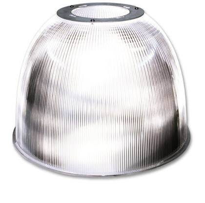
Representative photo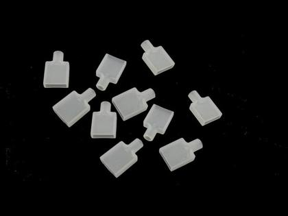
Representative photo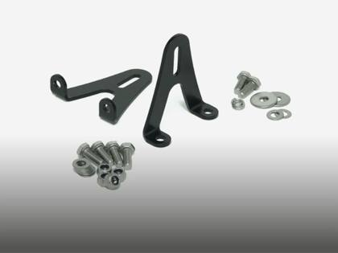
Representative photoOptic / reflector / diffuser
OPTIC_50°_PARIDA_70W_H19602
In stock since: 2019
1,000 pcsRef #895
Luminaire spare part / sub-assembly
UEXT NAL - SYSTEM UZAMYKANIA (PU029)
In stock since: 2019
953 pcsRef #896
Cover / frame / end cap
8830LED_9005_PHILIPS_SLM_KORPUS+REF+SKLO
In stock since: 2014–2015
652 pcsRef #897
Optic / reflector / diffuser
REF_SIMPLE_TSM/PSM_W_1X36/28/54W
In stock since: 2017
591 pcsRef #898
Luminaire spare part / sub-assembly
KIT_NAL_SYSTEM UZAMYKANIA PU029+KZ_1085
In stock since: 2019
564 pcsRef #899
Optic / reflector / diffuser
UZOSTAVA_REF_DWN_PREPUS_150_02_PU723
In stock since: 2024–2025
538 pcsRef #900
Optic / reflector / diffuser
ACS_PARIDA ECO_ REFLECTOR AL 80°
In stock since: 2020
521 pcsRef #901
Optic / reflector / diffuser
ASYM OPTIC CAPRIOLA II 50W F06401
In stock since: 2023
473 pcsRef #902
Cover / frame / end cap
KRYTKA_STVORCOVA_2_ACS_FIXING_KIT_WHITE
In stock since: 2021–2022
452 pcsRef #903
Optic / reflector / diffuser
ASYM OPTIC CAPRIOLA II 150W F19201
In stock since: 2023
402 pcsRef #904
More items without photo (169)
| Ref | Item | Type | Status | Qty |
|---|---|---|---|---|
| Ref #905 | UZOSTAVA_REF_DWN_PREPUS_150_PU726 In stock since: 2019 | Optic / reflector / diffuser | Spare part / component | 397 |
| Ref #906 | 2005665_PLASTIC_BAG_V_KORPUSE In stock since: 2016–2017 | Luminaire spare part / sub-assembly | Spare part / component | 363 |
| Ref #907 | REF_SCORPION_70/150W_SYMETRIC_PEENED In stock since: 2013 | Optic / reflector / diffuser | Spare part / component | 359 |
| Ref #908 | UZOSTAVA_REF_DWN_PREPUS_150_PU723 In stock since: 2019–2024 | Optic / reflector / diffuser | Spare part / component | 353 |
| Ref #909 | PRIBAL_FORTIS_ENGINE In stock since: 2018 | Luminaire spare part / sub-assembly | Spare part / component | 335 |
| Ref #910 | OPRG MR COVER DM 300MM W03 In stock since: 2024 | Cover / frame / end cap | Spare part / component | 300 |
| Ref #911 | UZOSTAVA_REF_DWN_PREPUS_150_02_PU726 In stock since: 2024–2025 | Optic / reflector / diffuser | Spare part / component | 289 |
| Ref #912 | OPRG MR I FDH 35 COVER DM PLAST W03 In stock since: 2025 | Cover / frame / end cap | Spare part / component | 278 |
| Ref #913 | OPALOVY DIFUZOR 2000X50MM In stock since: 2014 | Optic / reflector / diffuser | Spare part / component | 270 |
| Ref #914 | ACS_PTS S BUILT IN PLATE GRILATO In stock since: 2017 | Optic / reflector / diffuser | Spare part / component | 248 |
| Ref #915 | UZOSTAVA_REF_DWN_PREPUS_200_02_PU726 In stock since: 2025 | Optic / reflector / diffuser | Spare part / component | 235 |
| Ref #916 | ACS VIBA POLE BASE STATIC BLACK In stock since: 2022 | Luminaire spare part / sub-assembly | Spare part / component | 235 |
| Ref #917 | KIT_TORNADO_STAINLESS STEEL_2X58 In stock since: 2017–2018 | Luminaire spare part / sub-assembly | Spare part / component | 235 |
| Ref #918 | KONCOVKA_XTS41-1_GREY In stock since: 2019 | Cover / frame / end cap | Spare part / component | 232 |
| Ref #919 | KIT_TORNADO_STAINLESS STEEL_1X36 In stock since: 2021 | Luminaire spare part / sub-assembly | Spare part / component | 226 |
| Ref #920 | UZOSTAVA_REF_DWN_PREPUS_100_PU032 In stock since: 2024 | Optic / reflector / diffuser | Spare part / component | 215 |
| Ref #921 | PLASTIC_BAG_TDO_ECO_LED_3_1200MM In stock since: 2019 | Luminaire spare part / sub-assembly | Spare part / component | 195 |
| Ref #922 | OPTIC_50°_PARIDA_H25203 In stock since: 2019 | Optic / reflector / diffuser | Spare part / component | 171 |
| Ref #923 | ACS_VSN M V011 CLEAR GL RING W03 In stock since: 2016 | Luminaire spare part / sub-assembly | Spare part / component | 126 |
| Ref #924 | SNAPPY_LINE_ENDCAP_SSD/SFD In stock since: 2017–2018 | Cover / frame / end cap | Spare part / component | 122 |
| Ref #925 | ACCESSORIES_UX-AMY_FULL_CIRCULAR_LOUVRE In stock since: 2015 | Luminaire spare part / sub-assembly | Spare part / component | 120 |
| Ref #926 | UZOSTAVA_REF_DWN_PREPUS_200_02_PU032 In stock since: 2024–2025 | Optic / reflector / diffuser | Spare part / component | 119 |
| Ref #927 | KRYTKA_XTSF10-3_WHITE In stock since: 2017 | Cover / frame / end cap | Spare part / component | 111 |
| Ref #928 | INOX_BAG_TDO_ECO_LED_3_1500MM In stock since: 2023–2025 | Luminaire spare part / sub-assembly | Spare part / component | 109 |
| Ref #929 | KONCOVKA_XTAO16-1_GREY In stock since: 2015 | Cover / frame / end cap | Spare part / component | 109 |
| Ref #930 | INOX_BAG_TDO_ECO_LED_3_1800MM In stock since: 2020 | Luminaire spare part / sub-assembly | Spare part / component | 103 |
| Ref #931 | ACCESSORIES_TDO_STEEL In stock since: 2017 | Luminaire spare part / sub-assembly | Spare part / component | 102 |
| Ref #932 | UZOSTAVA_REF_DWN_PREPUS_150_EM_PU723 In stock since: 2019 | Optic / reflector / diffuser | Spare part / component | 100 |
| Ref #933 | ACCESSORIES ORIA - KONKA In stock since: 2017 | Luminaire spare part / sub-assembly | Spare part / component | 100 |
| Ref #934 | DD-12020.02 OPTIC 38_WHITE In stock since: 2017 | Optic / reflector / diffuser | Spare part / component | 99 |
| Ref #935 | SPW66-1_ADJUSTING_SLEEVE_FOR 1,5MM WIRE In stock since: 2017 | Luminaire spare part / sub-assembly | Spare part / component | 99 |
| Ref #936 | STI CLAMP+M6GRIP+COVERW10 In stock since: 2017–2022 | Cover / frame / end cap | Spare part / component | 87 |
| Ref #937 | KRYTKA_XTSF10-2_BLACK In stock since: 2014 | Cover / frame / end cap | Spare part / component | 85 |
| Ref #938 | KORPUS_SCORPION_70W_RX7S_CIERNY In stock since: 2014 | Cover / frame / end cap | Spare part / component | 79 |
| Ref #939 | UZOSTAVA_REF_DWN_PREPUS_200_PU032+PMMA F In stock since: 2019 | Optic / reflector / diffuser | Spare part / component | 77 |
| Ref #940 | KONCOVKA_XTS11-2_BLACK In stock since: 2021 | Cover / frame / end cap | Spare part / component | 64 |
| Ref #941 | ACCESSORIES_UX-AMY_HALF_LOUVRE In stock since: 2015 | Luminaire spare part / sub-assembly | Spare part / component | 63 |
| Ref #942 | UEMY ACC 2980 SET FOR RCD INSTALLATION In stock since: 2021 | Luminaire spare part / sub-assembly | Spare part / component | 58 |
| Ref #943 | ASYM OPTIC CAPRIOLA II 200W F22401 In stock since: 2023 | Optic / reflector / diffuser | Spare part / component | 52 |
| Ref #944 | BOTTOM REFLECTOR COVER IP65 In stock since: 2018 | Optic / reflector / diffuser | Spare part / component | 52 |
| Ref #945 | KONCOVKA_GNC11-1_GREY In stock since: 2015 | Cover / frame / end cap | Spare part / component | 52 |
| Ref #946 | UZOSTAVA_REF_DWN_PREPUS_150_EM_PU726 In stock since: 2019 | Optic / reflector / diffuser | Spare part / component | 51 |
| Ref #947 | SACIK_PX_10_P16_TOR_58W In stock since: 2015 | Luminaire spare part / sub-assembly | Spare part / component | 50 |
| Ref #948 | LYNX MEDIUM HOUSING WHITE In stock since: 2016 | Cover / frame / end cap | Spare part / component | 49 |
| Ref #949 | STI END CAP+LOCKING SCREW W10 In stock since: 2022 | Cover / frame / end cap | Spare part / component | 48 |
| Ref #950 | UZOSTAVA_REF_DWN_PREPUS_200_MATT_PU726 In stock since: 2024 | Optic / reflector / diffuser | Spare part / component | 48 |
| Ref #951 | STI END CAP+LOCKING SCREW G06 In stock since: 2017 | Cover / frame / end cap | Spare part / component | 46 |
| Ref #952 | UZOSTAVA_REF_DWN_PREPUS_200_02_PU723 In stock since: 2023–2025 | Optic / reflector / diffuser | Spare part / component | 46 |
| Ref #953 | KIT_TORNADO_STAINLESS STEEL_2X36 In stock since: 2019 | Luminaire spare part / sub-assembly | Spare part / component | 44 |
| Ref #954 | STI END CAP+LOCKING SCREW B05 In stock since: 2022 | Cover / frame / end cap | Spare part / component | 44 |
| Ref #955 | ACS_PARIDA ECO_ BRACKET In stock since: 2023 | Luminaire spare part / sub-assembly | Spare part / component | 44 |
| Ref #956 | FLOODL_SCORPI_ACC_PROT_GRID_FOR_70/150W In stock since: 2017 | Luminaire spare part / sub-assembly | Spare part / component | 43 |
| Ref #957 | KONCOVKA_GNC41-1_GREY In stock since: 2016 | Cover / frame / end cap | Spare part / component | 39 |
| Ref #958 | KIT_TORNADO_STAINLESS STEEL_1X18 In stock since: 2020 | Luminaire spare part / sub-assembly | Spare part / component | 38 |
| Ref #959 | KONCOVKA_GNC41-3_WHITE In stock since: 2015 | Cover / frame / end cap | Spare part / component | 37 |
| Ref #960 | ACS VIBA POLE BASE STATIC WHITE In stock since: 2022 | Luminaire spare part / sub-assembly | Spare part / component | 37 |
| Ref #961 | KRYTKA_XTSF10-1_GREY In stock since: 2016 | Cover / frame / end cap | Spare part / component | 36 |
| Ref #962 | ACS_AMY_FULL_CIRC_LOUVRE In stock since: 2015 | Optic / reflector / diffuser | Spare part / component | 35 |
| Ref #963 | ACS_AMY_HALF_LOUVRE In stock since: 2015 | Optic / reflector / diffuser | Spare part / component | 35 |
| Ref #964 | KONCOVKA_GNC12-1_GREY In stock since: 2016 | Cover / frame / end cap | Spare part / component | 33 |
| Ref #965 | KONCOVKA_GNC12-2_BLACK In stock since: 2013 | Cover / frame / end cap | Spare part / component | 30 |
| Ref #966 | OPTIC_90°_PARIDA_H25202 In stock since: 2022 | Optic / reflector / diffuser | Spare part / component | 30 |
| Ref #967 | ACS_KRYCI_PLECH_MOL_700X700 In stock since: 2020 | Cover / frame / end cap | Spare part / component | 30 |
| Ref #968 | ACS_PRG TBP BRACKET TDO V In stock since: 2022 | Luminaire spare part / sub-assembly | Spare part / component | 30 |
| Ref #969 | ACS_PARIDA ECO_ REFLECTOR_PC In stock since: 2020–2021 | Optic / reflector / diffuser | Spare part / component | 29 |
| Ref #970 | GNC37-1_KONCOVKA_CONTROL_T_FEED_GREY In stock since: 2013 | Cover / frame / end cap | Spare part / component | 28 |
| Ref #971 | KIT_TORNADO_STAINLESS STEEL_2X18 In stock since: 2019 | Luminaire spare part / sub-assembly | Spare part / component | 28 |
| Ref #972 | NASTROJ_XTSV12 In stock since: 2019 | Luminaire spare part / sub-assembly | Spare part / component | 28 |
| Ref #973 | KONCOVKA_XTS11-3_WHITE In stock since: 2021 | Cover / frame / end cap | Spare part / component | 27 |
| Ref #974 | CEILING_RE_SQUARE_WHITE In stock since: 2016 | Cover / frame / end cap | Spare part / component | 25 |
| Ref #975 | KEATON S 50W 730 ECG W/O OPTIC In stock since: 2020 | Optic / reflector / diffuser | Spare part / component | 24 |
| Ref #976 | UZOSTAVA_REF_DWN_PREPUS_250_PU723 In stock since: 2024–2025 | Optic / reflector / diffuser | Spare part / component | 24 |
| Ref #977 | UX_SKLO_KALENE_MAXI_GL18 In stock since: 2015 | Cover / frame / end cap | Spare part / component | 23 |
| Ref #978 | ACS_KONZOLA_WALL_STREETLIGHT_0,5M In stock since: 2017 | Luminaire spare part / sub-assembly | Spare part / component | 22 |
| Ref #979 | UX-GINNY_ACCESSORIES_SLEEVE_1,2_MINI In stock since: 2014 | Luminaire spare part / sub-assembly | Spare part / component | 21 |
| Ref #980 | UZOSTAVA_REF_DWN_PREPUS_200_EM_PU723 In stock since: 2019 | Optic / reflector / diffuser | Spare part / component | 21 |
| Ref #981 | ACS_GRAFIAS X4 GREY In stock since: 2015 | Luminaire spare part / sub-assembly | Spare part / component | 21 |
| Ref #982 | UZOSTAVA_REF_DWN_PREPUS_100_PU723 In stock since: 2025 | Optic / reflector / diffuser | Spare part / component | 19 |
| Ref #983 | UX-GINNY_ACCESSORIES_SLEEVE_1,2_MINI_LED In stock since: 2014 | Luminaire spare part / sub-assembly | Spare part / component | 18 |
| Ref #984 | UX-DOLLY_ACCESORRIES In stock since: 2017 | Luminaire spare part / sub-assembly | Spare part / component | 17 |
| Ref #985 | KIT_TORNADO_STAINLESS STEEL_1X58 In stock since: 2021–2022 | Luminaire spare part / sub-assembly | Spare part / component | 16 |
| Ref #986 | STADIO_MOON_ACCESSORIES In stock since: 2018 | Luminaire spare part / sub-assembly | Spare part / component | 16 |
| Ref #987 | UX-DOLLY_TRANSP_COVER_AND_DIFFUSER_GREE In stock since: 2017 | Optic / reflector / diffuser | Spare part / component | 16 |
| Ref #988 | X_CONNECTOR_COVER_PLATE_XTSF30-3_WHITE In stock since: 2015 | Cover / frame / end cap | Spare part / component | 15 |
| Ref #989 | ACS FRAME SFD PV1 C1 In stock since: 2021 | Cover / frame / end cap | Spare part / component | 15 |
| Ref #990 | KONCOVKA_XTS41-2_BLACK In stock since: 2021 | Cover / frame / end cap | Spare part / component | 14 |
| Ref #991 | UX-BELL AL IP23 SAFETY GRATE In stock since: 2015 | Cover / frame / end cap | Spare part / component | 14 |
| Ref #992 | OPTIC_PARIDA_ECO_85°_H00105 In stock since: 2021 | Optic / reflector / diffuser | Spare part / component | 13 |
| Ref #993 | UZOSTAVA_REF_DWN_PREPUS_150_EM_PU032 In stock since: 2019–2024 | Optic / reflector / diffuser | Spare part / component | 12 |
| Ref #994 | UZOSTAVA_REF_DWN_PREPUS_200_POLISH_PU723 In stock since: 2025 | Optic / reflector / diffuser | Spare part / component | 12 |
| Ref #995 | UCFT 2 WMD REF MD 170 CCG SPC In stock since: 2016 | Optic / reflector / diffuser | Spare part / component | 12 |
| Ref #996 | UX-GINNY_ACCESSORIES_SLEEVE_1,2,3_MAX In stock since: 2018 | Luminaire spare part / sub-assembly | Spare part / component | 12 |
| Ref #997 | FLOODL_SCORPI_ACC_WAL_BRACK_740_70/150 In stock since: 2017 | Luminaire spare part / sub-assembly | Spare part / component | 11 |
| Ref #998 | REFLECTOR BELL AL2 In stock since: 2018 | Optic / reflector / diffuser | Spare part / component | 11 |
| Ref #999 | ACS_SURFACED FRAME SANA SS1 FOR PR In stock since: 2023 | Cover / frame / end cap | Spare part / component | 9 |
| Ref #1000 | KEATON M 70W 730 ECG W/O OPTIC In stock since: 2020 | Optic / reflector / diffuser | Spare part / component | 9 |
| Ref #1001 | OPTIC_90°_PARIDA_70W_H19601 In stock since: 2017 | Optic / reflector / diffuser | Spare part / component | 9 |
| Ref #1002 | UZOSTAVA_REF_DWN_PREPUS_150_PU032 In stock since: 2019 | Optic / reflector / diffuser | Spare part / component | 9 |
| Ref #1003 | UX-SOFIA ACCESSORIES BRACKET FOR TRACK In stock since: 2017 | Luminaire spare part / sub-assembly | Spare part / component | 9 |
| Ref #1004 | DOLLY_TRANSP_COVER_AND_DIFFUSOR_YELLOW In stock since: 2014 | Optic / reflector / diffuser | Spare part / component | 8 |
| Ref #1005 | FLOODL_SCORPI_ACC_PROT_GRID_FOR_250/400W In stock since: 2014 | Luminaire spare part / sub-assembly | Spare part / component | 8 |
| Ref #1006 | UZOSTAVA_REF_DWN_PREPUS_150_ASYM_PU726 In stock since: 2018 | Optic / reflector / diffuser | Spare part / component | 8 |
| Ref #1007 | XTSP11-2_CONNECTOR COVER STRIP 3M_BLACK In stock since: 2017 | Cover / frame / end cap | Spare part / component | 8 |
| Ref #1008 | FLOODL_SCORPI_ACC_WAL_BRACK_740_70/150W In stock since: 2017 | Luminaire spare part / sub-assembly | Spare part / component | 8 |
| Ref #1009 | REFLECTOR_36DEG_TRACK_AVAN35 In stock since: 2017 | Optic / reflector / diffuser | Spare part / component | 8 |
| Ref #1010 | ACS_EMY 2916 DOSKA+PLCTOGRAM In stock since: 2017 | Luminaire spare part / sub-assembly | Spare part / component | 7 |
| Ref #1011 | ACS_EMY 2980 SET - FLAG PICTOGRAM INSTAL In stock since: 2017 | Cover / frame / end cap | Spare part / component | 7 |
| Ref #1012 | UZOSTAVA_REF_DWN_PREPUS_200_ASYM_PU726 In stock since: 2018 | Optic / reflector / diffuser | Spare part / component | 7 |
| Ref #1013 | ACS VIBA POLE BASE MOVABLE BLACK In stock since: 2022 | Luminaire spare part / sub-assembly | Spare part / component | 7 |
| Ref #1014 | ACS VIBA POLE BASE MOVABLE WHITE In stock since: 2022 | Luminaire spare part / sub-assembly | Spare part / component | 7 |
| Ref #1015 | AD-OVALE OLS PRISLUSENSTVO 0 In stock since: 2014 | Luminaire spare part / sub-assembly | Spare part / component | 6 |
| Ref #1016 | ACS_ACN PRIVOD 5X0,75 1,5M + KRYTKA In stock since: 2018 | Cover / frame / end cap | Spare part / component | 6 |
| Ref #1017 | EXT-CITERA-PODZOSTAVA DIFUZOR In stock since: 2018 | Optic / reflector / diffuser | Spare part / component | 5 |
| Ref #1018 | KONCOVKA_GB21-2_BLACK In stock since: 2016 | Cover / frame / end cap | Spare part / component | 5 |
| Ref #1019 | LENO_1200_ERS_CLIP_SACIK In stock since: 2015 | Luminaire spare part / sub-assembly | Spare part / component | 5 |
| Ref #1020 | PLASTIC_PLAST_ROUND_HOUSING In stock since: 2014 | Cover / frame / end cap | Spare part / component | 5 |
| Ref #1021 | UZOSTAVA_REF_DWN_PREPUS_150_ASYM_PU723 In stock since: 2019 | Optic / reflector / diffuser | Spare part / component | 5 |
| Ref #1022 | ACS FRAME PB PV1 C1 In stock since: 2021 | Cover / frame / end cap | Spare part / component | 5 |
| Ref #1023 | ACS FRAME SFD PR1 C1 In stock since: 2021 | Cover / frame / end cap | Spare part / component | 5 |
| Ref #1024 | RAMIK_LEGRAND In stock since: 2016 | Cover / frame / end cap | Spare part / component | 5 |
| Ref #1025 | ACS FILTER FOR AVIOR RED In stock since: 2015 | Luminaire spare part / sub-assembly | Spare part / component | 4 |
| Ref #1026 | INOX_BAG_TDO_ECO_LED_3_600MM In stock since: 2023 | Luminaire spare part / sub-assembly | Spare part / component | 4 |
| Ref #1027 | KEATON S 30W 730 ECG W/O OPTIC In stock since: 2020 | Optic / reflector / diffuser | Spare part / component | 4 |
| Ref #1028 | SNAPPY_LINE_ENDCAP_SSD/SFD_B05 In stock since: 2016 | Cover / frame / end cap | Spare part / component | 4 |
| Ref #1029 | UZOSTAVA_REF_DWN_PREPUS_200_EM_PU032 In stock since: 2018 | Optic / reflector / diffuser | Spare part / component | 4 |
| Ref #1030 | ACS_VSN M V02 RING G06 In stock since: 2018 | Luminaire spare part / sub-assembly | Spare part / component | 4 |
| Ref #1031 | ARCLINE OPTIC 40 MC 27°, REAR CONN. In stock since: 2017 | Optic / reflector / diffuser | Spare part / component | 4 |
| Ref #1032 | UX-CATHY_ACCESSORIES In stock since: 2017 | Luminaire spare part / sub-assembly | Spare part / component | 4 |
| Ref #1033 | UX_CATHY_ACC_LAMP_SHADER_WHITH_AL_STRIP In stock since: 2016 | Luminaire spare part / sub-assembly | Spare part / component | 4 |
| Ref #1034 | ACS_CHS 68 L150 In stock since: 2021–2022 | Luminaire spare part / sub-assembly | Spare part / component | 3 |
| Ref #1035 | UZOSTAVA_REF_DWN_PREPUS_250_EM_PU726 In stock since: 2017 | Optic / reflector / diffuser | Spare part / component | 3 |
| Ref #1036 | REFLECTOR_24DEG_TRACK_AVAN35 In stock since: 2017 | Optic / reflector / diffuser | Spare part / component | 3 |
| Ref #1037 | UX-DOLLY_TRANSPAR_COV_AND_DIFFUSOR_BLUE In stock since: 2017 | Optic / reflector / diffuser | Spare part / component | 3 |
| Ref #1038 | KEATON S 35W 740 ECG W/O OPTIC In stock since: 2021 | Optic / reflector / diffuser | Spare part / component | 2 |
| Ref #1039 | STI RCD END CAP+LOCKING SCREW G06 In stock since: 2020 | Cover / frame / end cap | Spare part / component | 2 |
| Ref #1040 | UZOSTAVA_REF_DWN_PREPUS_200_ASYM_PU723 In stock since: 2020 | Optic / reflector / diffuser | Spare part / component | 2 |
| Ref #1041 | UZOSTAVA_REF_DWN_PREPUS_250_ASYMM_PU726 In stock since: 2016 | Optic / reflector / diffuser | Spare part / component | 2 |
| Ref #1042 | UZOSTAVA_REF_DWN_PREPUS_250_PU726 In stock since: 2025 | Optic / reflector / diffuser | Spare part / component | 2 |
| Ref #1043 | ACS 1,5M SUSP FOR AIRN C M In stock since: 2017 | Luminaire spare part / sub-assembly | Spare part / component | 2 |
| Ref #1044 | ACS_LIPO_60_KONCOVKY+PRECH+SVORK In stock since: 2019 | Luminaire spare part / sub-assembly | Spare part / component | 2 |
| Ref #1045 | ACS_LIPO_60_KRYTKA In stock since: 2019 | Cover / frame / end cap | Spare part / component | 2 |
| Ref #1046 | RBL L SSD REF 338084 135 EDA BC3 In stock since: 2016–2019 | Optic / reflector / diffuser | Spare part / component | 2 |
| Ref #1047 | UX-DOLOMITE 224 ACS SLEEVE F 222MM H325 In stock since: 2017 | Luminaire spare part / sub-assembly | Spare part / component | 2 |
| Ref #1048 | ACS FRAME SS4 PV W03 In stock since: 2021 | Cover / frame / end cap | Spare part / component | 1 |
| Ref #1049 | EULA_7-20W_PLEXISKLO_ANTHRACIT In stock since: 2015 | Cover / frame / end cap | Spare part / component | 1 |
| Ref #1050 | KEATON M 90W 730 ECG W/O OPTIC In stock since: 2021 | Optic / reflector / diffuser | Spare part / component | 1 |
| Ref #1051 | KEATON S 30W 740 ECG W/O OPTIC In stock since: 2021 | Optic / reflector / diffuser | Spare part / component | 1 |
| Ref #1052 | KONCOVKA_XTSC612-1_GREY In stock since: 2017 | Cover / frame / end cap | Spare part / component | 1 |
| Ref #1053 | PLASTIC_BAG_TDO_ECO_LED_3_1500MM In stock since: 2019 | Luminaire spare part / sub-assembly | Spare part / component | 1 |
| Ref #1054 | STADIO_VENUS_SM_ACCESSORIES In stock since: 2015 | Luminaire spare part / sub-assembly | Spare part / component | 1 |
| Ref #1055 | STI RCD END CAP+LOCKING SCREW B05 In stock since: 2022 | Cover / frame / end cap | Spare part / component | 1 |
| Ref #1056 | STI RCD END CAP+LOCKING SCREW W10 In stock since: 2025 | Cover / frame / end cap | Spare part / component | 1 |
| Ref #1057 | UZOSTAVA_REF_DWN_PREPUS_100_PU726 In stock since: 2023 | Optic / reflector / diffuser | Spare part / component | 1 |
| Ref #1058 | UZOSTAVA_REF_DWN_PREPUS_200_EM_PU726 In stock since: 2019 | Optic / reflector / diffuser | Spare part / component | 1 |
| Ref #1059 | ACS_ACN L OPAL DIFUZOR In stock since: 2017 | Optic / reflector / diffuser | Spare part / component | 1 |
| Ref #1060 | ACS_ACN OPAL DIFUZOR In stock since: 2019 | Optic / reflector / diffuser | Spare part / component | 1 |
| Ref #1061 | ACS_GRAFIAS X1 BLACK In stock since: 2021 | Luminaire spare part / sub-assembly | Spare part / component | 1 |
| Ref #1062 | ACS_GRAFIAS X4 BLACK In stock since: 2016 | Luminaire spare part / sub-assembly | Spare part / component | 1 |
| Ref #1063 | ACS_SMP LS CP In stock since: 2020 | Luminaire spare part / sub-assembly | Spare part / component | 1 |
| Ref #1064 | ACS_SMP LS DUMMY In stock since: 2020 | Luminaire spare part / sub-assembly | Spare part / component | 1 |
| Ref #1065 | ACS_SMP LS T-WIRING DUMMY 3X1,5 In stock since: 2020 | Luminaire spare part / sub-assembly | Spare part / component | 1 |
| Ref #1066 | ACS_SMP LS T-WIRING DUMMY 4X1,5 In stock since: 2020 | Luminaire spare part / sub-assembly | Spare part / component | 1 |
| Ref #1067 | ACS_SURFACED FRAME SANA SS5 FOR PV In stock since: 2018 | Cover / frame / end cap | Spare part / component | 1 |
| Ref #1068 | ACS_TDO V ECO L PRIEBEŽNÁ KABELÁŽ 5X2,5 In stock since: 2019 | Luminaire spare part / sub-assembly | Spare part / component | 1 |
| Ref #1069 | ACS_TDO V ECO M PRIEBEŽNÁ KABELÁŽ 5X2,5 In stock since: 2019 | Luminaire spare part / sub-assembly | Spare part / component | 1 |
| Ref #1070 | FLOODLIGHT STAR ACCESORIES LOUVRE In stock since: 2017 | Optic / reflector / diffuser | Spare part / component | 1 |
| Ref #1071 | REFLECTOR_15DEG_TRACK_AVAN25 In stock since: 2017 | Optic / reflector / diffuser | Spare part / component | 1 |
| Ref #1072 | STRING PRISADENÉ STROPNÉ PIKTOGRAM PU20 In stock since: 2016 | Cover / frame / end cap | Spare part / component | 1 |
| Ref #1073 | UFRT 04 PTI REF MT/ST 1150 ___ G06 In stock since: 2018 | Optic / reflector / diffuser | Spare part / component | 1 |
LED modules, drivers & controls 33 items · 2,948 pcs
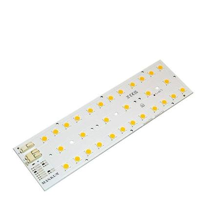
Representative photo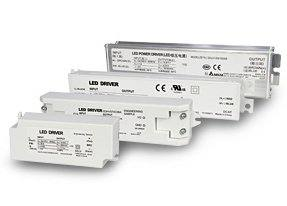
Representative photoLED module / light engine
ENG_TDO II ECO M 697284 ECG 48L 5630
In stock since: 2018
653 pcsRef #1074
LED module / light engine
DECLAN_MODUL_12,5W_4000_FREE_END+FEM_CON
In stock since: 2021
447 pcsRef #1075
More items without photo (31)
| Ref | Item | Type | Status | Qty |
|---|---|---|---|---|
| Ref #1083 | DALI_SELV_SAFETY_DEVICE In stock since: 2013 | Sensor / lighting control | Accessory / system part | 40 |
| Ref #1084 | IOT NODE PLC NEMA_KOMPLET / MOD_927 In stock since: 2024 | Sensor / lighting control | Accessory / system part | 33 |
| Ref #1087 | LMS_CD_TC_CITYOWL_CONTROLLER_RF In stock since: 2015–2016 | Sensor / lighting control | Accessory / system part | 14 |
| Ref #1092 | IP65_BOX_IOT_NODE_NA STLP In stock since: 2024–2025 | Sensor / lighting control | Accessory / system part | 6 |
| Ref #1093 | LMS_CD_LS_WEB_CONTROL In stock since: 2018 | Sensor / lighting control | Accessory / system part | 5 |
| Ref #1094 | SPINAC_LEGRAND In stock since: 2016 | Sensor / lighting control | Accessory / system part | 5 |
| Ref #1100 | IOT NODE RF NEMA_KOMPLET In stock since: 2023–2024 | Sensor / lighting control | Accessory / system part | 2 |
| Ref #1105 | LMS_CD_TC_CITYOWL_CONTROLLER_PLC In stock since: 2017 | Sensor / lighting control | Accessory / system part | 1 |
| Ref #1076 | HJ-LED-231 In stock since: 2014 | Driver / ballast / power supply | Spare part / component | 382 |
| Ref #1077 | HJ-BYQ-762CH In stock since: 2014 | Driver / ballast / power supply | Spare part / component | 362 |
| Ref #1078 | HJ-BYQ-657 In stock since: 2014 | Driver / ballast / power supply | Spare part / component | 352 |
| Ref #1079 | HJ-LED-430 In stock since: 2014 | Driver / ballast / power supply | Spare part / component | 254 |
| Ref #1080 | ENG_TDO II ECO M 225083 EDA 18L 3528 In stock since: 2018 | LED module / light engine | Spare part / component | 175 |
| Ref #1081 | ENGINE_LED_OL12_MODULE_5-10W_80CRI_3000K In stock since: 2019 | LED module / light engine | Spare part / component | 52 |
| Ref #1082 | ENG_TDO II ECO XL 1155084 ECG 36L 5630 In stock since: 2018 | LED module / light engine | Spare part / component | 48 |
| Ref #1085 | ENGINE_LED_OL6_MODULE_3-5W_80CRI_3000K In stock since: 2016 | LED module / light engine | Spare part / component | 30 |
| Ref #1086 | STADIO_GEARBOX_IP65_AL_2220.3_16.5A In stock since: 2016 | Driver / ballast / power supply | Spare part / component | 24 |
| Ref #1088 | ENGINE_LED_OL6_MODULE_3-5W_80CRI_4000K In stock since: 2016 | LED module / light engine | Spare part / component | 13 |
| Ref #1089 | GEAR_BOX_SPORT_IP65_ALU_1000.3/E_10,3A In stock since: 2015–2018 | Driver / ballast / power supply | Spare part / component | 10 |
| Ref #1090 | ENGINE_LED_OL12_MODULE_5-10W_80CRI_4000K In stock since: 2019 | LED module / light engine | Spare part / component | 8 |
| Ref #1091 | POWER SUPPLY HLG-150H 230V AC/24V DC In stock since: 2015 | Driver / ballast / power supply | Spare part / component | 8 |
| Ref #1095 | ENGINE_LED_OL12_MODULE_8-10W80CRI_3000K In stock since: 2017 | LED module / light engine | Spare part / component | 4 |
| Ref #1096 | ENG_TDO II ECO M 420084 EDA 36L 3528 In stock since: 2016 | LED module / light engine | Spare part / component | 4 |
| Ref #1097 | ZSR SRN DRIVER BOX - 2 DRIVERY In stock since: 2022 | Driver / ballast / power supply | Spare part / component | 4 |
| Ref #1098 | DECLAN_MODUL_25W_3000K_2IN1, OPEN END In stock since: 2018 | LED module / light engine | Spare part / component | 3 |
| Ref #1099 | DYAN_600X600MM_830_UGR<19_W/O DRIVER In stock since: 2019 | Driver / ballast / power supply | Spare part / component | 2 |
| Ref #1101 | POWER SUPPLY HLG-60H 230V AC/48V DC In stock since: 2018 | Driver / ballast / power supply | Spare part / component | 2 |
| Ref #1102 | LIPO_60_LED MODUL_4000K In stock since: 2019 | LED module / light engine | Spare part / component | 2 |
| Ref #1103 | DECLAN_MODUL_12,5W_3000_FREE_END+FEM_CON In stock since: 2020 | LED module / light engine | Spare part / component | 1 |
| Ref #1104 | ENG_TDO II ECO M 600084 EDA 48L 5630 In stock since: 2016 | LED module / light engine | Spare part / component | 1 |
| Ref #1106 | POWER SUPPLY HLG-60H 230V AC/48V DC In stock since: 2017 | Driver / ballast / power supply | Spare part / component | 1 |
Other items 129 items · 470 pcs
| Ref | Item | Type | Status | Qty |
|---|---|---|---|---|
| Ref #1107 | DD-12020.02_OPTIC 25_WHITE In stock since: 2017 | Other item (as listed) | Spare part / component | 99 |
| Ref #1108 | RTVS PLAST B 25W 3000K DALI WHITE In stock since: 2023 | Other item (as listed) | Spare part / component | 49 |
| Ref #1109 | NAOS_WALL_UP-DOWN_SANBLASTED_2X55_DALI In stock since: 2014 | Other item (as listed) | Spare part / component | 35 |
| Ref #1110 | VCL-W001 19W-DALI In stock since: 2025 | Other item (as listed) | Spare part / component | 20 |
| Ref #1111 | 1SV701 BASIC MODEL NO DIM (SINISTRA M) In stock since: 2017 | Other item (as listed) | Spare part / component | 20 |
| Ref #1112 | DAR PV1 MCD 400084 134 ECG In stock since: 2021–2022 | Other item (as listed) | Spare part / component | 17 |
| Ref #1113 | RAVO_55-060C_DALI_4K_WHITE In stock since: 2019 | Other item (as listed) | Spare part / component | 12 |
| Ref #1114 | ONSA M GCD ASR 250083 33W NGG In stock since: 2021 | Other item (as listed) | Spare part / component | 10 |
| Ref #1115 | UX-SALLY_V In stock since: 2017 | Other item (as listed) | Spare part / component | 10 |
| Ref #1116 | 3188_FREYN_BRIGHTVIEW_FIX_ALUSIKOVA In stock since: 2015 | Other item (as listed) | Spare part / component | 9 |
| Ref #1117 | UX-NANCY_BLACK In stock since: 2015 | Other item (as listed) | Spare part / component | 7 |
| Ref #1118 | NK SET §K- RED§KCIA In stock since: 2016 | Other item (as listed) | Spare part / component | 6 |
| Ref #1119 | ESO M D-I SSD B90 575083 37W FIX W03 In stock since: 2025 | Other item (as listed) | Spare part / component | 5 |
| Ref #1120 | ORIA2_L_46W_1600MM_4000K In stock since: 2021 | Other item (as listed) | Spare part / component | 5 |
| Ref #1121 | ILUMTECH - DALI PLC BRIDGE In stock since: 2021 | Other item (as listed) | Spare part / component | 5 |
| Ref #1122 | OSEA L045 GMD OPD 80084 10W NHG In stock since: 2021 | Other item (as listed) | Spare part / component | 5 |
| Ref #1123 | UX-PLATINUM 222 ACS SLEVE FI 222MM H260 In stock since: 2017 | Other item (as listed) | Spare part / component | 5 |
| Ref #1124 | ESO M D-I SSD B90 610084 37W DALI B05 In stock since: 2025 | Other item (as listed) | Spare part / component | 4 |
| Ref #1125 | ESO M D-I SSD B90 610084 37W FIX W03 In stock since: 2025 | Other item (as listed) | Spare part / component | 4 |
| Ref #1126 | PRO S SS 112° 1430084 192 ECG B05 In stock since: 2021 | Other item (as listed) | Spare part / component | 4 |
| Ref #1127 | UPLASTIC PLAST_2812_3H/M_L/R/D In stock since: 2014 | Other item (as listed) | Spare part / component | 4 |
| Ref #1128 | USMI PMT L06 173074 114 EDP G06 In stock since: 2021 | Other item (as listed) | Spare part / component | 4 |
| Ref #1129 | ALPHARD 18W 4000K 1700 LM In stock since: 2025 | Other item (as listed) | Spare part / component | 3 |
| Ref #1130 | FADIL_LL-LLL-CR60-SA54-WW-WD In stock since: 2017 | Other item (as listed) | Spare part / component | 3 |
| Ref #1131 | MERCURY XL CL1 LOGO 250-400W GREY In stock since: 2014 | Other item (as listed) | Spare part / component | 3 |
| Ref #1132 | PLC H BSC S S/S OPD 180084 117 ECG W03 In stock since: 2021 | Other item (as listed) | Spare part / component | 3 |
| Ref #1133 | AEDATEMPA ATTACA 128 WHITE In stock since: 2017 | Other item (as listed) | Spare part / component | 2 |
| Ref #1134 | OFRN II PV4 MCD 3350 9TW 131 EBT W03 In stock since: 2021 | Other item (as listed) | Spare part / component | 2 |
| Ref #1135 | OTCS II S PMT L01 835073 155 ECC G06 In stock since: 2025 | Other item (as listed) | Spare part / component | 2 |
| Ref #1136 | UETN XL S/S LNS 2280074 1188 ECG W03 In stock since: 2015 | Other item (as listed) | Spare part / component | 2 |
| Ref #1137 | AEDATEMPA LIBA 512 GREEN BOX In stock since: 2017 | Other item (as listed) | Spare part / component | 2 |
| Ref #1138 | CMR C M S/S 320084 127 ECG G35 In stock since: 2019 | Other item (as listed) | Spare part / component | 2 |
| Ref #1139 | LIPO_60_24W_4000K_DALI In stock since: 2019 | Other item (as listed) | Spare part / component | 2 |
| Ref #1140 | LNS 1460074 1124 ECG W03 In stock since: 2014 | Other item (as listed) | Spare part / component | 2 |
| Ref #1141 | OELS SSD 53° 285093 134 ECG W03 In stock since: 2017 | Other item (as listed) | Spare part / component | 2 |
| Ref #1142 | ONSA M GCD ASR 150093 20W NGG In stock since: 2022 | Other item (as listed) | Spare part / component | 2 |
| Ref #1143 | ONSA S GCD 30° 81084 12W NGG In stock since: 2021 | Other item (as listed) | Spare part / component | 2 |
| Ref #1144 | ORA II M S/S PRD 465084 137 ECG SPC In stock since: 2022 | Other item (as listed) | Spare part / component | 2 |
| Ref #1145 | ORIA2_M_37W_1300MM_4000K In stock since: 2021 | Other item (as listed) | Spare part / component | 2 |
| Ref #1146 | ORNG II S/S OPD 410084 150 ECG W03 In stock since: 2016 | Other item (as listed) | Spare part / component | 2 |
| Ref #1147 | SMI PMT L01 515074 135 ECC G06 In stock since: 2021 | Other item (as listed) | Spare part / component | 2 |
| Ref #1148 | ZPR DUO RCS 24° 710084 160 EDA W03 In stock since: 2023 | Other item (as listed) | Spare part / component | 2 |
| Ref #1149 | AEDATEMPA ATTACA P 1024 BLACK In stock since: 2014 | Other item (as listed) | Spare part / component | 1 |
| Ref #1150 | AXEPO/3/1/SE_AT In stock since: 2016 | Other item (as listed) | Spare part / component | 1 |
| Ref #1151 | FARID_LL-CLP-R60-SA53-WW-WD In stock since: 2017 | Other item (as listed) | Spare part / component | 1 |
| Ref #1152 | FREYN PV4 MCD 315084 22W FE3 W03 In stock since: 2021 | Other item (as listed) | Spare part / component | 1 |
| Ref #1153 | OTCS II L PMT L05 2230074 1140 ECC G06 In stock since: 2023 | Other item (as listed) | Spare part / component | 1 |
| Ref #1154 | PRESTIGE LS LWE 625084 42W FIX W03 In stock since: 2025 | Other item (as listed) | Spare part / component | 1 |
| Ref #1155 | RTVS PLAST PMD M OPD 370083 128 EDA W03 In stock since: 2024 | Other item (as listed) | Spare part / component | 1 |
| Ref #1156 | RVO_RIADIACE KOMPONENTY In stock since: 2025 | Other item (as listed) | Spare part / component | 1 |
| Ref #1157 | UORA II L S/S PRD 545084 146 ECG SPC In stock since: 2023 | Other item (as listed) | Spare part / component | 1 |
| Ref #1158 | UX-EMY_2904_1H_1,2W_3,6V_1000MAH_WHITE In stock since: 2016 | Other item (as listed) | Spare part / component | 1 |
| Ref #1159 | VOSE TCS II S PMT L01 449073 129 PLO G06 In stock since: 2023 | Other item (as listed) | Spare part / component | 1 |
| Ref #1160 | VOSE TCS II S PMT L04 351073 122 PLO G06 In stock since: 2024 | Other item (as listed) | Spare part / component | 1 |
| Ref #1161 | ZSR TCS II L PMT L01 2445084 1167 EDO G6 In stock since: 2022 | Other item (as listed) | Spare part / component | 1 |
| Ref #1162 | VOLNY In stock since: 2016 | Other item (as listed) | Spare part / component | 1 |
| Ref #1163 | 280.14_FREYN_II_4743LM_36W_DALI_KUSTURI In stock since: 2015 | Other item (as listed) | Spare part / component | 1 |
| Ref #1164 | 379_SMART_MIROR_SLE_PREZ_ZRKADLO_JURICA In stock since: 2017 | Other item (as listed) | Spare part / component | 1 |
| Ref #1165 | AC/DC ADAPT UK6V DC,FOR ATTACA TOUCH PA In stock since: 2017 | Other item (as listed) | Spare part / component | 1 |
| Ref #1166 | AEDATEMPA ATTACA 128 BLACK In stock since: 2017 | Other item (as listed) | Spare part / component | 1 |
| Ref #1167 | BITWISE BC4X1 In stock since: 2014 | Other item (as listed) | Spare part / component | 1 |
| Ref #1168 | BRN M SSD PDR 620084 150 ECG W03 In stock since: 2021 | Other item (as listed) | Spare part / component | 1 |
| Ref #1169 | DALI INPUT UNIT In stock since: 2019 | Other item (as listed) | Spare part / component | 1 |
| Ref #1170 | DCN III PR1 PLL 530084 144 EDA W03 In stock since: 2019 | Other item (as listed) | Spare part / component | 1 |
| Ref #1171 | DCN III PV1 PLL 450084 139 ECG W03 In stock since: 2019 | Other item (as listed) | Spare part / component | 1 |
| Ref #1172 | DLS II S/S MCD 545084 165 ECG W03 In stock since: 2021 | Other item (as listed) | Spare part / component | 1 |
| Ref #1173 | EITON XL S/S LNS 2280074 1188 ECG W03 In stock since: 2014 | Other item (as listed) | Spare part / component | 1 |
| Ref #1174 | ELYS TR T 2750 930 FR34 DA WH In stock since: 2021 | Other item (as listed) | Spare part / component | 1 |
| Ref #1175 | ELYS TR T 2750 940 FR53 DA BL In stock since: 2021 | Other item (as listed) | Spare part / component | 1 |
| Ref #1176 | FLANN L SM LG 6750 830 PRIS DA GR In stock since: 2017 | Other item (as listed) | Spare part / component | 1 |
| Ref #1177 | FLANN L SM LG 6950 840 PRIS DA GR In stock since: 2016 | Other item (as listed) | Spare part / component | 1 |
| Ref #1178 | FLANN M SM LG 5400 830 PRIS DA GR In stock since: 2017 | Other item (as listed) | Spare part / component | 1 |
| Ref #1179 | FLANN M SM LG 5550 840 PRIS DA GR In stock since: 2016 | Other item (as listed) | Spare part / component | 1 |
| Ref #1180 | FORTIS IP66 ME 740 In stock since: 2017 | Other item (as listed) | Spare part / component | 1 |
| Ref #1181 | FRS OPD 430073 140 ECG W03 In stock since: 2021 | Other item (as listed) | Spare part / component | 1 |
| Ref #1182 | FRS OPD 435074 140 ECG W03 In stock since: 2021 | Other item (as listed) | Spare part / component | 1 |
| Ref #1183 | FRS QTR L55 1120083 191 ECG B05 In stock since: 2018 | Other item (as listed) | Spare part / component | 1 |
| Ref #1184 | GHA-2 SSD LMW 3425084 1241 EDA B05 In stock since: 2022 | Other item (as listed) | Spare part / component | 1 |
| Ref #1185 | GHA-L MDS LCO 2240074 1146 EDA W03 In stock since: 2022 | Other item (as listed) | Spare part / component | 1 |
| Ref #1186 | GLORIOUS_410-1262-03 3100MM WHITE In stock since: 2019 | Other item (as listed) | Spare part / component | 1 |
| Ref #1187 | GLORIOUS_PRO 410-1312- 03 4000MM WHITE In stock since: 2019 | Other item (as listed) | Spare part / component | 1 |
| Ref #1188 | KTN S PMT R01 590074 150 ECG G06 In stock since: 2021 | Other item (as listed) | Spare part / component | 1 |
| Ref #1189 | KU_PRG 1.5 II ICE PLL 730084 156 EDA W3 In stock since: 2019 | Other item (as listed) | Spare part / component | 1 |
| Ref #1190 | LILSCHOOL ASY L SU S 2470 830 PRIS FI In stock since: 2022 | Other item (as listed) | Spare part / component | 1 |
| Ref #1191 | MLN DUO L RCS LWL 830084 152 ECG W03 In stock since: 2025 | Other item (as listed) | Spare part / component | 1 |
| Ref #1192 | NALCENF1PH3 In stock since: 2019 | Other item (as listed) | Spare part / component | 1 |
| Ref #1193 | NALENDF1PH3 In stock since: 2019 | Other item (as listed) | Spare part / component | 1 |
| Ref #1194 | OAVR MVB DW 24° 550084 152 ECG W03 In stock since: 2016 | Other item (as listed) | Spare part / component | 1 |
| Ref #1195 | OBLS SSD 67° 1870084 1212 E10 In stock since: 2016 | Other item (as listed) | Spare part / component | 1 |
| Ref #1196 | OBLS SSD 67° 2790084 1340 E10 In stock since: 2016 | Other item (as listed) | Spare part / component | 1 |
| Ref #1197 | ODCN II SS1 MCL 380084 133 ECG W03 In stock since: 2017 | Other item (as listed) | Spare part / component | 1 |
| Ref #1198 | ODCN PV1 MCL 345083 135 ECG W03 In stock since: 2017 | Other item (as listed) | Spare part / component | 1 |
| Ref #1199 | OEDAN M SSD ASM 360084 139 ECG W03 In stock since: 2017 | Other item (as listed) | Spare part / component | 1 |
| Ref #1200 | OEDAN S SSD ASM 225084 126 EDA W03 In stock since: 2015 | Other item (as listed) | Spare part / component | 1 |
| Ref #1201 | OFRN SF1 MCD 320084 136 E10 W03 In stock since: 2016 | Other item (as listed) | Spare part / component | 1 |
| Ref #1202 | OOWN II SSD 130° 200084 30W NGR In stock since: 2018 | Other item (as listed) | Spare part / component | 1 |
| Ref #1203 | OQRK D SSD MCD FDH 22854 ECG G06 In stock since: 2017 | Other item (as listed) | Spare part / component | 1 |
| Ref #1204 | ORLX H L L RCB ML2 655084 148 EDA W03 In stock since: 2019 | Other item (as listed) | Spare part / component | 1 |
| Ref #1205 | ORLX H L T RCB ML2 655084 148 ECG W03 In stock since: 2019 | Other item (as listed) | Spare part / component | 1 |
| Ref #1206 | ORLX H M F RCB ML2 420084 131 ECG W03 In stock since: 2019 | Other item (as listed) | Spare part / component | 1 |
| Ref #1207 | OSLA L075 GMD OPD 75083 10W NHG In stock since: 2018 | Other item (as listed) | Spare part / component | 1 |
| Ref #1208 | OSPY 1.0M OPD 260084 129 EDA ELG In stock since: 2022 | Other item (as listed) | Spare part / component | 1 |
| Ref #1209 | OVGA PV1 OPD 305083 145 ECG W03 In stock since: 2016 | Other item (as listed) | Spare part / component | 1 |
| Ref #1210 | OYAN L070 GMD 2OPD 28083 10W NHG In stock since: 2019 | Other item (as listed) | Spare part / component | 1 |
| Ref #1211 | REBA TR L 1700 9PI FR40 WL BL In stock since: 2016 | Other item (as listed) | Spare part / component | 1 |
| Ref #1212 | ROZVADZAC CITYSYS (RVO) In stock since: 2019 | Other item (as listed) | Spare part / component | 1 |
| Ref #1213 | SMI PMT L01 1080074 174 ECC G06 In stock since: 2023 | Other item (as listed) | Spare part / component | 1 |
| Ref #1214 | SML_LMS_CD_OM_SMART L CONTROL UNIT S In stock since: 2017 | Other item (as listed) | Spare part / component | 1 |
| Ref #1215 | SPY II M F DI SSD MCD 605084 141 EDA W In stock since: 2021 | Other item (as listed) | Spare part / component | 1 |
| Ref #1216 | SPY II M L DI SSD MCD 605084 141 EDA W In stock since: 2021 | Other item (as listed) | Spare part / component | 1 |
| Ref #1217 | SPY II M T DI SSD MCD 605084 141 EDA W In stock since: 2021 | Other item (as listed) | Spare part / component | 1 |
| Ref #1218 | STAD_MOON_C1_VERY_NARR_2000W_CAB_SHO_AR In stock since: 2017 | Other item (as listed) | Spare part / component | 1 |
| Ref #1219 | TSA1GGLBFN35L840EFW In stock since: 2019 | Other item (as listed) | Spare part / component | 1 |
| Ref #1220 | UCLC 2L S/S ML2 550084 136 ECG W03 In stock since: 2019 | Other item (as listed) | Spare part / component | 1 |
| Ref #1221 | UEITON L S/S LNS 1130074 195 ECG W03 In stock since: 2016 | Other item (as listed) | Spare part / component | 1 |
| Ref #1222 | UIND L2 PV1 ML2 370084 135 ECG W03 In stock since: 2019 | Other item (as listed) | Spare part / component | 1 |
| Ref #1223 | UKEN PR1 MCD 395084 140 ECG W03 In stock since: 2016 | Other item (as listed) | Spare part / component | 1 |
| Ref #1224 | UKTN M PMT R01 590074 150 ECG G06 In stock since: 2016 | Other item (as listed) | Spare part / component | 1 |
| Ref #1225 | UMDL LMD L L SS ML2 735084 155 EDA W03 In stock since: 2019 | Other item (as listed) | Spare part / component | 1 |
| Ref #1226 | UMDL LMD L T SS ML2 735084 155 EDA W03 In stock since: 2019 | Other item (as listed) | Spare part / component | 1 |
| Ref #1227 | UNIVERSAL-TRANSLATOR USB/DMX/RDM In stock since: 2015 | Other item (as listed) | Spare part / component | 1 |
| Ref #1228 | URLX A1 4S PR1 ML2 500084 134 ECG W03 In stock since: 2023 | Other item (as listed) | Spare part / component | 1 |
| Ref #1229 | URLX A1 4S PV1 ML2 465084 141 ECG W03 In stock since: 2018 | Other item (as listed) | Spare part / component | 1 |
| Ref #1230 | URLX A1 4S PV1 ML2 500084 134 D2S W03 In stock since: 2019 | Other item (as listed) | Spare part / component | 1 |
| Ref #1231 | URLX A8 2M PV4 ML2 515084 135 D2S W03 In stock since: 2019 | Other item (as listed) | Spare part / component | 1 |
| Ref #1232 | USMI PMT L01 920074 180 EDP G06 In stock since: 2021 | Other item (as listed) | Spare part / component | 1 |
| Ref #1233 | UX-NANCY_GREY In stock since: 2017 | Other item (as listed) | Spare part / component | 1 |
| Ref #1234 | UX-NAOS_FLOOR_SANDBLASTED In stock since: 2017 | Other item (as listed) | Spare part / component | 1 |
| Ref #1235 | UX-TILLY In stock since: 2019 | Other item (as listed) | Spare part / component | 1 |
Summary of contents
By item kind
| Status | Items | Quantity (pcs) | Share |
|---|---|---|---|
| Complete luminaire Finished luminaire as listed; lamps for metal-halide / fluorescent luminaires are normally not included. | 630 | 45,648 | 36.5% |
| Accessory / system part Track, suspension and mounting accessories and linear-system parts, used with the luminaires. | 272 | 61,085 | 48.9% |
| Spare part / component Optics, covers, LED modules, drivers and other parts – not a luminaire on its own. | 333 | 18,243 | 14.6% |
| Total | 1,235 | 124,976 | 100% |
By product type
| Product type | Items | Quantity (pcs) | Share |
|---|---|---|---|
| Suspension wire / mounting kit | 69 | 33,112 | 26.5% |
| Track adapter / connector | 127 | 22,414 | 17.9% |
| LED panel | 50 | 10,790 | 8.6% |
| LED downlight | 180 | 9,574 | 7.7% |
| Luminaire for metal-halide / halogen lamp | 29 | 8,934 | 7.1% |
| Optic / reflector / diffuser | 67 | 7,107 | 5.7% |
| Moisture-proof luminaire (IP65/IP66) | 52 | 6,497 | 5.2% |
| Luminaire spare part / sub-assembly | 62 | 4,578 | 3.7% |
| Track rail / track part | 48 | 3,632 | 2.9% |
| Cover / frame / end cap | 50 | 3,246 | 2.6% |
| LED high-bay luminaire | 28 | 1,833 | 1.5% |
| Linear lighting system part (profile / rail / cover) | 20 | 1,821 | 1.5% |
| LED linear industrial luminaire | 12 | 1,742 | 1.4% |
| LED module / light engine | 14 | 1,441 | 1.2% |
| Outdoor luminaire | 24 | 1,402 | 1.1% |
| Driver / ballast / power supply | 11 | 1,401 | 1.1% |
| Emergency luminaire / exit sign | 76 | 974 | 0.8% |
| Track spotlight | 72 | 966 | 0.8% |
| LED street light | 5 | 925 | 0.7% |
| Indoor LED luminaire | 33 | 615 | 0.5% |
| Other item (as listed) | 129 | 470 | 0.4% |
| LED linear / profile luminaire | 16 | 442 | 0.4% |
| Luminaire for fluorescent tubes | 23 | 438 | 0.4% |
| UV-C disinfection luminaire | 10 | 291 | 0.2% |
| LED floodlight | 20 | 225 | 0.2% |
| Sensor / lighting control | 8 | 106 | 0.1% |
| Total | 1,235 | 124,976 | 100% |
By categorie
| Categorie | Items | Quantity (pcs) | Share |
|---|---|---|---|
| LED panels | 50 | 10,790 | 8.6% |
| High-bay, linear industrial & moisture-proof luminaires | 92 | 10,072 | 8.1% |
| Street lights, floodlights & outdoor luminaires | 49 | 2,552 | 2.0% |
| Indoor – downlights, linear & ceiling luminaires | 249 | 12,452 | 10.0% |
| Luminaires for metal-halide, halogen & fluorescent lamps | 52 | 9,372 | 7.5% |
| Track spotlights & 3-phase track systems | 247 | 27,012 | 21.6% |
| Emergency lighting | 76 | 974 | 0.8% |
| UV-C disinfection units | 10 | 291 | 0.2% |
| Suspension & mounting accessories | 69 | 33,112 | 26.5% |
| Optics, covers & spare parts | 179 | 14,931 | 11.9% |
| LED modules, drivers & controls | 33 | 2,948 | 2.4% |
| Other items | 129 | 470 | 0.4% |
| Total | 1,235 | 124,976 | 100% |
Shipping estimate
| Total volume (approx.) | ≈ 420–650 m³ |
| Total weight (approx.) | ≈ 95–150 t |
| 40′ High Cube containers | 7–10 |
| 20′ Standard containers | 15–24 |
Estimate from typical packed sizes and weights per product type (panels, high-bays and moisture-proof luminaires make up most of the volume). Final loading plan confirmed after viewing.
Container capacity used: 40′ HC ≈ 68 m³ / 26.5 t, 20′ ≈ 28 m³ / 24 t (practical loading).
Container capacity used: 40′ HC ≈ 68 m³ / 26.5 t, 20′ ≈ 28 m³ / 24 t (practical loading).